8. Capítulo: Redes Neuronales Convolucionales (CNN)#
Las redes neuronales convolucionales (Convolutional Neural Networks, CNN) constituyen una clase fundamental de modelos de deep learning diseñados específicamente para procesar datos con estructura espacial, como las imágenes. Su funcionamiento se basa en la operación matemática de convolución, que puede entenderse intuitivamente como la aplicación sistemática de filtros o máscaras sobre una grilla de datos, permitiendo detectar patrones locales como bordes, texturas y formas. Tal como señalan OpenStax:
“Las redes neuronales convolucionales (CNN) son una poderosa clase de modelos de redes neuronales desarrolladas para procesar datos estructurados en forma de grilla, como las imágenes, haciendo uso de la operación matemática de convolución (que es similar a aplicar un filtro o una máscara a una imagen).”— Principles of Data Science, OpenStax (2025) [OpenStax, 2025]
Desde una perspectiva conceptual, una CNN puede entenderse como un modelo compuesto por dos grandes etapas funcionales, claramente diferenciadas y complementarias, como se ilustra en la Figura Fig. 8.1.
La primera etapa, conocida como feature learning stage o convolutional backbone, está formada por capas convolucionales, funciones de activación y operaciones de pooling. Su objetivo principal es extraer representaciones jerárquicas de la entrada: a partir de la imagen original, la red aprende progresivamente features cada vez más abstractas, pasando de patrones simples (como bordes o contrastes) a estructuras más complejas y semánticamente relevantes. En esta fase, la red explota explícitamente la estructura espacial de los datos.
La segunda etapa, denominada decision stage o fully connected stage, toma las representaciones aprendidas y las transforma en una decisión final, como una clase, una probabilidad o una predicción numérica. Para ello, los mapas de características generados por el backbone se reorganizan mediante la operación de flatten y se procesan con capas densamente conectadas, de forma análoga a una red neuronal tradicional.
Esta separación conceptual —aprendizaje de características seguido de toma de decisiones— proporciona un marco claro para comprender tanto la arquitectura de las CNN como su proceso de entrenamiento. A lo largo de este capítulo, exploraremos en detalle cada una de estas etapas, comenzando por los mecanismos fundamentales de la convolución y avanzando luego hacia el aprendizaje de parámetros, la retropropagación del error y la capacidad de generalización de estos modelos.
{kind=link}
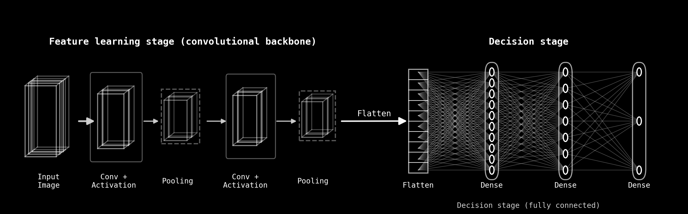
Fig. 8.1 Esquema conceptual de una red neuronal convolucional, mostrando la separación entre la etapa de feature learning (backbone convolucional) y la etapa de decisión basada en capas totalmente conectadas.#
8.1. Convolución, stride, padding, perspectiva 3D, canales y pooling#
El objetivo es ir desde un ejemplo numérico muy concreto hasta una visión conceptual de las CNN modernas, sin perder rigor y manteniendo una narrativa clara y visual.
8.2. Introducción#
Antes de hablar de capas, neuronas, funciones de activación, propagación hacia adelante o retropropagación del error, es imprescindible entender una operación que constituye un pilar fundamental en cualquier CNN moderna: la convolución.
Pero incluso antes de llegar a la convolución, debemos detenernos en un concepto básico y profundamente relevante en teledetección: el parche satelital.
8.3. El parche satelital: unidades locales de información#
Un parche es simplemente un recorte rectangular de una imagen satelital o aérea. En lugar de procesar toda la escena de una sola vez, solemos dividirla en pequeños bloques, por ejemplo de 32×32 o 64×64 píxeles.
Estos parches pueden generarse:
Sin solapamiento, como un mosaico que particiona la escena en bloques disjuntos.
Con solapamiento, desplazando una ventana deslizante que avanza píxel a píxel y captura múltiples vistas del mismo patrón local.
El objetivo es claro: capturar información local.
Toda CNN, incluso las más profundas, comienza analizando la imagen a través de pequeñas regiones locales. Entender qué es un parche y cómo se procesa es el primer paso para comprender el funcionamiento interno del modelo.
{kind=link}
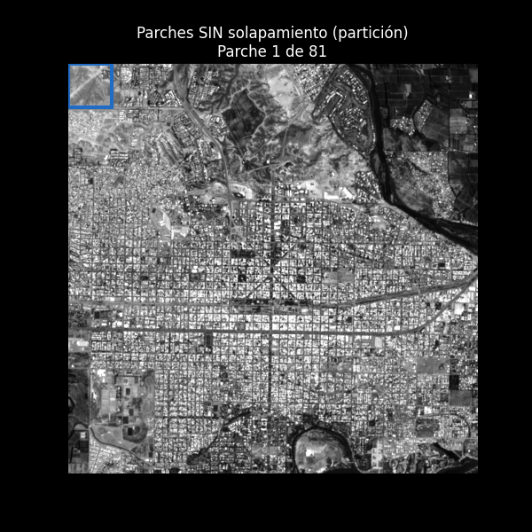
Fig. 8.2 parches con overlap#

Fig. 8.3 parches con overlap#
8.4. Filtros sobre un parche: clásicos y aprendidos#
Dentro de cada parche actúan los filtros, y aquí conviene distinguir dos tipos muy diferentes.
8.4.1. Filtros clásicos de procesamiento de imágenes#
Por un lado están los filtros clásicos de procesamiento de imágenes: Sobel, Prewitt, Laplaciano, Gaussian blur, Gabor, entre otros. Cada uno tiene una estructura fija y está diseñado para cumplir una función bien definida:
detectar bordes verticales u horizontales,
resaltar contornos cerrados,
suavizar ruido,
o identificar texturas periódicas.
Estos operadores fueron creados mucho antes de las redes neuronales y todavía son ampliamente utilizados para el análisis exploratorio de imágenes.
8.4.2. Filtros aprendidos por una CNN#
Por otro lado están los filtros aprendidos por una CNN. A diferencia de los filtros clásicos, sus valores no se establecen manualmente: la red los aprende automáticamente durante el entrenamiento mediante descenso de gradiente.
Curiosamente, las primeras capas de una CNN suelen aprender filtros muy parecidos a Sobel o Prewitt. Esto no ocurre porque alguien los programe así, sino porque detectar cambios locales —bordes, contrastes, texturas suaves— es una necesidad fundamental para cualquier sistema de visión artificial.
8.5. Una representación formal de Imágenes y Parches#
8.5.1. Imagen como función o matriz#
Formalmente, una imagen discreta puede representarse de estas maneras:
8.5.1.1. Imagen en escala de grises#
Como una función definida sobre una grilla finita de píxeles: \(I : \{1,\dots,H\} \times \{1,\dots,W\} \to \mathbb{R}\)
Equivalente a decir que es una matriz: \(I \in \mathbb{R}^{H \times W}\)
8.5.1.2. Imagen con canales (por ejemplo RGB)#
Se representa como un tensor (o arreglo 3D): \(I \in \mathbb{R}^{H \times W \times C}\)
donde \(C\) es el número de canales (por ejemplo, \(C=3\) para RGB).
8.5.2. Definición formal de parche (patch)#
Un parche es una restricción local de la imagen a un subconjunto rectangular de índices.
Sea un tamaño de parche \(k_h \times k_w\).
Un parche anclado en la esquina superior izquierda ((i,j)) se define como la sub-matriz / sub-tensor: \(P_{i,j} = I[i : i+k_h,\; j : j+k_w]\)
8.5.2.1. Dimensión del parche#
En escala de grises: \(P_{i,j} \in \mathbb{R}^{k_h \times k_w}\)
En una imagen con (C) canales: \(P_{i,j} \in \mathbb{R}^{k_h \times k_w \times C}\)
8.5.2.1.1. Ejemplo: del parche 6×6 al filtro Sobel-X#
Con estos conceptos en mente, podemos avanzar hacia el corazón de la etapa de aprendizaje de características: la convolución. Para entenderla de manera transparente, utilizaremos un ejemplo completamente explícito.
Consideremos el siguiente parche numérico de 6×6, donde cada número representa la intensidad de un píxel:
\( I = \begin{bmatrix} 3 & 1 & 7 & 2 & 5 & 0 \\ 4 & 9 & 2 & 8 & 1 & 6 \\ 5 & 3 & 0 & 4 & 7 & 2 \\ 8 & 1 & 6 & 3 & 9 & 5 \\ 2 & 4 & 7 & 1 & 0 & 8 \\ 9 & 3 & 5 & 2 & 6 & 4 \end{bmatrix} \)
Sobre este parche aplicaremos el filtro Sobel-X, cuya estructura es:
\( K = \begin{bmatrix} 1 & 0 & -1 \\ 2 & 0 & -2 \\ 1 & 0 & -1 \end{bmatrix} \)
Este kernel estima la componente horizontal del gradiente, es decir, cuánto cambia la intensidad al pasar de izquierda a derecha:
Valores positivos indican que la imagen se intensifica hacia la derecha.
Valores negativos indican que se oscurece.
Valores cercanos a cero indican regiones más homogéneas.
8.6. Construcción del parche y del kernel en Python#
```python
import numpy as np
I = np.array([
[3, 1, 7, 2, 5, 0],
[4, 9, 2, 8, 1, 6],
[5, 3, 0, 4, 7, 2],
[8, 1, 6, 3, 9, 5],
[2, 4, 7, 1, 0, 8],
[9, 3, 5, 2, 6, 4]
], dtype=float)
K = np.array([
[ 1, 0, -1],
[ 2, 0, -2],
[ 1, 0, -1]
], dtype=float)
I, K
```
8.7. ¿Qué es la convolución?#
La operación de convolución —o más exactamente, de correlación cruzada, que es la forma práctica utilizada por la mayoría de las implementaciones de CNN— consiste en:
Superponer el kernel sobre una ventana del mismo tamaño dentro del parche.
Multiplicar cada valor de la ventana por el valor correspondiente del kernel.
Sumar todos los productos y asignar ese resultado a una posición de la salida.
Desplazar el kernel una columna hacia la derecha y repetir el proceso; una vez completada la fila, bajar un píxel y continuar.
En esencia, la convolución es un operador local que transforma vecindarios en valores.
Cuando el kernel recorre todo el parche, obtenemos un nuevo mapa que llamamos salida o feature map para ese filtro.
8.8. Primeros cálculos manuales:#
\( O_{1,1}\) y \(O_{1,2} \)
Calculemos juntos el primer valor de la salida, \(O_{1,1}\).
Tomamos la ventana 3×3 ubicada en la esquina superior izquierda:
\( W_1 = \begin{bmatrix} 3 & 1 & 7 \\ 4 & 9 & 2 \\ 5 & 3 & 0 \end{bmatrix} \)
Multiplicamos elemento por elemento por el kernel Sobel-X, sumamos todo y obtenemos: \(O_{1,1}\) = \(5\).
Ahora desplazamos el kernel una columna a la derecha. La nueva ventana es: \( W_2 = \begin{bmatrix} 1 & 7 & 2 \\ 9 & 2 & 8 \\ 3 & 0 & 4 \end{bmatrix} \)
Repetimos la multiplicación y la suma, obteniendo: \(O_{1,2}\) = \(0\).
Este procedimiento continúa hasta cubrir todas las posiciones posibles. El calculo general para \(O_{i,j}\) es:
\( O_{i,j} = \sum_{u=0}^{2} \sum_{v=0}^{2} W_{i+u,\,j+v}\, K_{u,v} \)
8.9. Tamaño de la salida y concepto de stride#
Como nuestro parche mide 6×6 y el filtro 3×3, y estamos avanzando de a un píxel (stride = 1), el tamaño de la salida será: \((6 - 3 + 1) \times (6 - 3 + 1) = 4 \times 4.\)
La salida completa (que aquí podemos precomputar) es:
\( O_{4,4} = \begin{bmatrix} 5 & 0 & -3 & 8\\\ 1 & 4 & -3 & -1\\ 6 & 4 & -2 & -6\\ -9 & -4 & 5 & -10 \end{bmatrix} \)
Cada número indica cuán intensa es la variación horizontal en ese vecindario.
Valores de gran magnitud revelan bordes marcados; valores cercanos a cero indican transiciones suaves en la dirección horizontal.
En general, el stride define cuántos píxeles avanza el filtro en cada desplazamiento:
Con stride = 1 se examinan todas las posiciones posibles.
Con stride > 1 se descartan posiciones intermedias y se obtienen mapas más pequeños y más compactos.
```pyton
def conv_valid(img, kernel):
H, W = img.shape
kH, kW = kernel.shape
out_H = H - kH + 1
out_W = W - kW + 1
out = np.zeros((out_H, out_W), dtype=float)
for i in range(out_H):
for j in range(out_W):
patch = img[i:i+kH, j:j+kW]
out[i, j] = np.sum(patch * kernel)
return out
O = conv_valid(I, K)
O
```
8.10. El papel del padding#
En nuestro ejemplo hemos utilizado una convolución válida, sin padding: sólo ubicamos el kernel en posiciones donde cabe completamente dentro del parche.
Sin embargo, muchas arquitecturas modernas utilizan padding, que consiste en agregar un borde artificial —usualmente de ceros— alrededor de la imagen antes de aplicar la convolución. Esto permite que las capas convolucionales:
no reduzcan el tamaño espacial de la imagen en cada paso,
preserven mejor la información de los bordes,
y mantengan dimensiones constantes cuando así se desea (lo que a menudo se denomina same padding).
{kind=link}
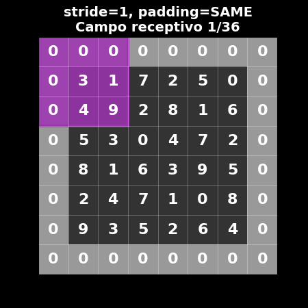
Fig. 8.4 Stride 1, con padding (same)#
8.11. Cuatro ejemplos 2D: combinaciones de stride y padding#
En la práctica, el comportamiento espacial de una convolución depende tanto del kernel como de la combinación de stride y padding. Para fijar ideas, consideramos cuatro configuraciones fundamentales:
Stride = 1, sin padding (valid, s = 1).
Stride = 1, con padding (same, s = 1).
Stride = 2, sin padding (valid, s = 2).
Stride = 2, con padding (same, s = 2).
En la animación, cada uno de estos casos se muestra mediante un GIF 2D sobre fondo negro, donde se ve:
la imagen o el parche de entrada,
el filtro deslizándose,
y la construcción progresiva de la salida.
Estas animaciones permiten ver con claridad:
cuándo el filtro puede o no cubrir completamente los bordes,
cómo cambia el tamaño del mapa de salida al variar el stride,
y cómo el padding puede conservar las dimensiones espaciales originales.
Stride 1, sin padding (valid)
{kind=link}
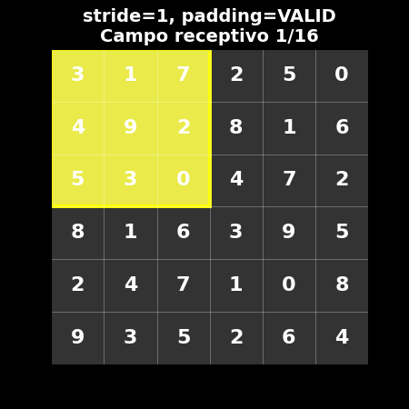
Fig. 8.5 Stride 1, sin padding (valid)#
Stride 1, con padding (same)
Fig. 8.6 Stride 1, con padding (same)#
Stride 2, sin padding (valid)
{kind=link}
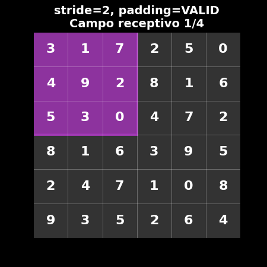
Fig. 8.7 Stride 2, sin padding (valid)#
Stride 1, con padding (same)
{kind=link}
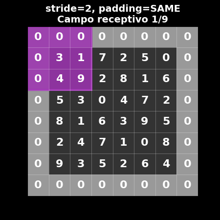
Fig. 8.8 Stride 2, con padding (same)#
8.12. De la visión 2D a la perspectiva 3D típica de las CNN#
En muchos artículos científicos y esquemas de arquitecturas CNN, los mapas de características no se muestran como matrices planas, sino como bloques tridimensionales:
El ancho y el alto representan las dimensiones espaciales.
La profundidad representa los canales o filtros.
Para conectar nuestra intuición 2D con esta representación, podemos tomar los mismos cuatro ejemplos de stride y padding y mostrarlos ahora en perspectiva 3D:
El parche de entrada se representa como un volumen (o una “lámina” si tiene un solo canal).
El filtro aparece como un pequeño bloque amarillo deslizándose sobre la cara frontal.
La salida se muestra como otro bloque, desplazado en el eje de profundidad, que se va completando conforme el filtro recorre la entrada.
Estos GIF 3D ayudan a entender por qué en la literatura se representan las CNN como cadenas de bloques tridimensionales apilados.
Stride 1, sin padding (valid)
{kind=link}
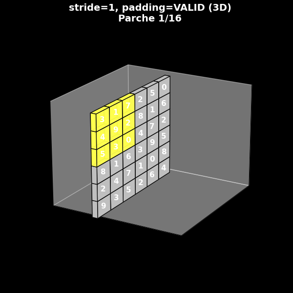
Fig. 8.9 Stride 1, sin padding (valid)#
Stride 1, con padding (same)
{kind=link}
Fig. 8.10 Stride 1, con padding (same)#
Stride 2, sin padding (valid)
{kind=link}
Fig. 8.11 Stride 2, sin padding (valid)#
Stride 2, con padding (same)
{kind=link}
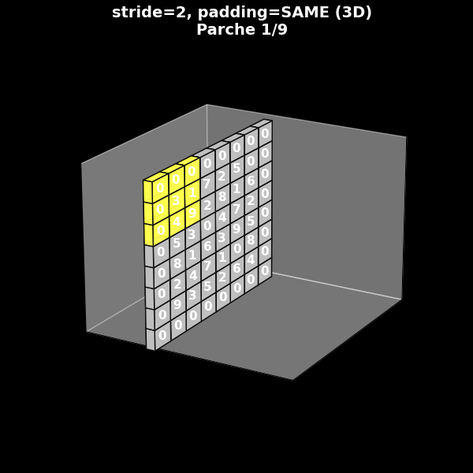
Fig. 8.12 Stride 2, con padding (same)#
8.13. Canales en Convoluciones#
En una red neuronal convolucional, la operación de convolución no actúa sobre un único parche bidimensional, sino sobre un parche multicanal. Esto significa que, para cada posición espacial, el filtro se aplica simultáneamente sobre todos los canales de entrada asociados a ese parche.
En este ejemplo, el parche está compuesto por tres canales, que corresponden a las bandas RGB de una imagen color. Cada canal aporta una matriz de valores distinta, y a cada uno de ellos se le aplica un kernel específico, produciendo una respuesta parcial por canal. Sin embargo, el principio es completamente general: esos canales no tienen por qué ser RGB. En aplicaciones reales pueden representar bandas espectrales de sensores ópticos, canales de radar, índices derivados, variables ambientales o cualquier conjunto de variables co-registradas espacialmente.
Una vez calculadas las respuestas parciales de cada canal para una misma posición espacial, estos valores se combinan mediante una suma, produciendo un único valor escalar asociado a esa posición en el mapa de salida. A esta suma se le agrega un término de sesgo (bias), que actúa como un desplazamiento constante y permite ajustar el nivel de activación del filtro, independientemente de la intensidad de las respuestas locales.
El resultado final de esta combinación —suma de las convoluciones por canal más el bias— constituye el valor del mapa de activación previo a la función de activación. De este modo, cada filtro aprende a integrar información proveniente de múltiples canales para detectar patrones espaciales complejos, manteniendo coherencia espacial pero enriqueciendo la representación con información multifuente.
{kind=link}
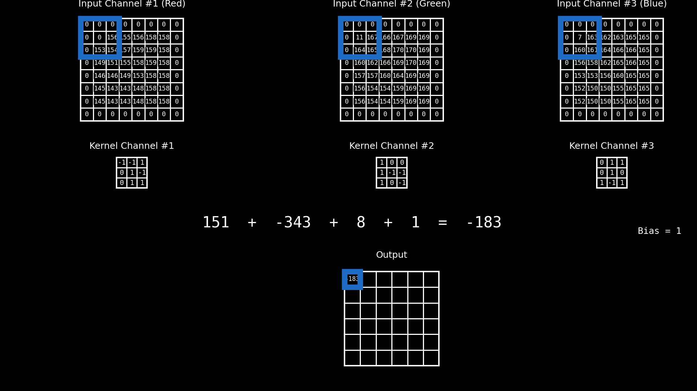
Fig. 8.13 Multiples canales#
8.13.1. De canales físicos a mapas de características#
Es importante destacar que estos canales iniciales —que en la primera capa convolucional suelen corresponder a bandas físicas como RGB, bandas espectrales, canales de radar u otras variables medidas por un sensor— no se mantienen a lo largo de toda la red. A partir de la segunda capa convolucional, la entrada ya no está compuesta por bandas físicas, sino por mapas de activación o mapas de características (feature maps) producidos por la capa anterior. Cada uno de estos mapas representa la respuesta de un filtro aprendido, codificando patrones como bordes, contrastes, texturas o combinaciones espaciales más complejas.
En consecuencia, las convoluciones sucesivas operan sobre representaciones cada vez más abstractas, donde los canales ya no tienen un significado físico directo, sino un significado semántico aprendido por la red. Este mecanismo permite que la CNN transforme progresivamente información sensorial cruda en descriptores de alto nivel, manteniendo la estructura espacial pero enriqueciendo la representación mediante la composición jerárquica de características.
8.14. ¿Qué representa un canal?#
Hasta este punto, tanto en 2D como en 3D, hemos trabajado con un parche de un solo canal: cada píxel se describe con un único valor (por ejemplo, la reflectancia de una banda espectral específica).
En la práctica, sin embargo, las imágenes satelitales y las CNN modernas trabajan casi siempre con múltiples canales:
Imágenes RGB: 3 canales (rojo, verde, azul).
Imágenes multiespectrales (como Sentinel-2): múltiples bandas (por ejemplo, azul, verde, rojo, infrarrojo cercano, etc.).
Datos de radar SAR: distintas polarizaciones o incluso componentes complejos.
En este contexto, un canal es una “capa” de información superpuesta espacialmente a las demás. Cada píxel ya no es un único número, sino un vector de valores, uno por cada canal.
8.15. Pooling: reducción espacial y robustez frente a traslaciones#
Finalmente, junto a la convolución suele aparecer otra operación esencial: el pooling.
El pooling reduce la resolución espacial seleccionando, por ejemplo, el valor máximo dentro de regiones 2×2 (max-pooling). Esta operación:
hace que el modelo sea más robusto a pequeñas traslaciones (si un borde se desplaza levemente, el máximo de la región suele seguir capturando su presencia),
reduce significativamente la cantidad de información que debe procesar la red en etapas posteriores,
y favorece una cierta invariancia espacial a nivel local.
8.16. Activaciones de filtros aprendidos#
En las secciones anteriores se introdujo la convolución como una operación matemática fundamental en las redes neuronales convolucionales, mediante la cual una imagen es transformada por un conjunto de filtros aprendidos. Hasta ahora, el énfasis estuvo puesto en la estructura de la operación y en el rol de los filtros como parámetros entrenables. En esta sección se introduce un nuevo concepto clave: el mapa de características o respuesta del filtro, que permite observar el efecto concreto de esos filtros sobre una imagen real. Tras aplicar la función de activación no lineal, este resultado da lugar al mapa de activación propiamente dicho.
8.16.1. Definición matemática del filtro convolucional#
Sea una imagen de entrada
y un filtro convolucional aprendido
donde \(k\) indexa al filtro dentro de una capa.
La respuesta lineal asociada al filtro \(k\) se define como:
donde \(*\) denota la operación de convolución discreta.
El resultado es un mapa bidimensional:
cuyo valor en cada posición espacial indica la intensidad de respuesta del filtro.
En forma explícita:
8.16.2. Interpretación conceptual#
Esta expresión formaliza una idea central:
Un filtro convolucional define qué patrón buscar; el mapa de respuesta indica dónde aparece y con qué intensidad. Tras aplicar la función de activación no lineal, este mapa se convierte en el mapa de activación utilizado por la red en las capas siguientes.
8.16.3. Qué representa la visualización#
El GIF asociado a esta sección muestra el conjunto de mapas de respuesta lineal del filtro (pre-activación):
correspondientes a los filtros de la primera capa convolucional de una red ResNet18 preentrenada.
Todos los mapas se calculan en paralelo a partir de la misma imagen de entrada.
La numeración de los filtros es un índice interno y no implica orden temporal ni jerarquía de aprendizaje.
8.16.4. Aporte conceptual#
Esta sección explicita el paso desde los datos crudos a una representación funcional:
La imagen deja de ser un conjunto de píxeles y pasa a representarse como un conjunto de respuestas espaciales lineales sensibles a distintos patrones visuales. Estas respuestas constituyen los mapas producidos por la operación de convolución y serán la base para las transformaciones no lineales que se introducirán en la siguiente sección.
En el contexto de imágenes satelitales, estas funciones suelen responder a bordes, texturas, patrones geométricos y transiciones agua–tierra, sentando las bases para representaciones jerárquicas más complejas en capas posteriores.
8.17. Funciones de Activación#
En esta sección presentaremos ejemplos de distintas funciones de activación:
ReLu
Leaky ReLU
Tanh
ELU
GELU
Swish
Softmax
8.17.1. Función de activación (ReLU) sobre un feature map#
¿Qué es una función de activación?
Una función de activación es una operación matemática que se aplica a la salida de una neurona o de un feature map para introducir no linealidad en la red neuronal.
Gracias a las funciones de activación, las redes neuronales pueden aprender relaciones complejas y no lineales entre los datos de entrada y la salida deseada.
8.17.1.1. Ejemplo#
En el GIF vas a ver tres elementos al mismo tiempo:
Arriba (Output): la matriz de salida de la convolución (feature map crudo).
Abajo (Activation / ReLU): el mismo mapa, pero luego de aplicar ReLU celda por celda.
A la derecha (gráfica de ReLU): la curva \(\text{ReLU}(x)\) y un punto que se mueve para cada celda.
Idea clave
La activación se aplica valor por valor (element-wise).
No mezcla celdas ni mezcla canales: toma un número \(x\) y devuelve un número \(f(x)\).
{kind=link}
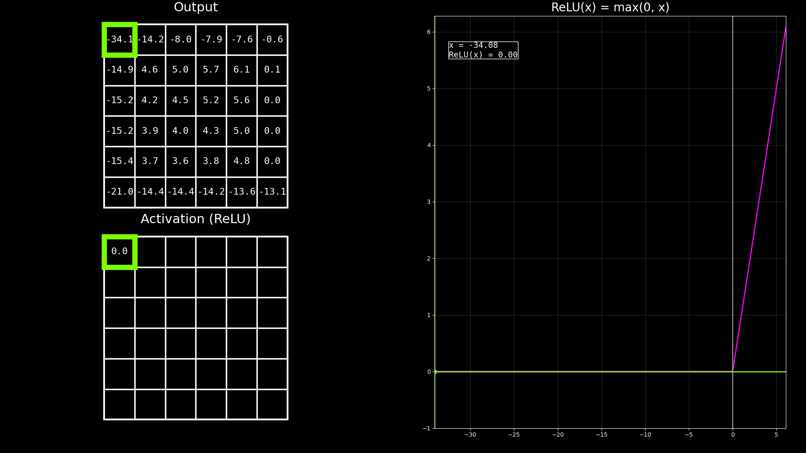
Fig. 8.14 output_relu_with_graph#
8.17.1.2. Definición de ReLU#
Definición de ReLU
La función ReLU (Rectified Linear Unit) se define como:
8.17.1.3. Explicación#
1) “En una red convolucional, después de calcular el feature map con una convolución, normalmente aplicamos una función de activación. Esta activación introduce no linealidad y ayuda a que la red aprenda patrones complejos.”
2) “Arriba vemos el Output: la salida numérica de la convolución. Cada celda es un valor que indica cuánto respondió el filtro en esa posición.”
3) ¿Qué hace ReLU?
“Ahora aplicamos ReLU, que se define como \(\text{ReLU}(x)=\max(0,x)\). En otras palabras: si el valor es negativo lo apagamos a cero; si es positivo lo dejamos igual.”
4) Conexión con la gráfica
“A la derecha está el gráfico de ReLU. El punto se mueve con cada celda: el valor original \(x\) está en el eje horizontal, y el valor activado \(\text{ReLU}(x)\) está en el eje vertical. Si \(x\) cae a la izquierda de cero, el punto queda sobre el eje horizontal en \(y=0\).”
5) Resultado (Activation)
“Abajo vemos el resultado final: el mismo mapa pero después de ReLU. Notá que el tamaño de la matriz no cambia: solo cambian los valores negativos que pasan a cero.”
Mensaje final
ReLU funciona como un ‘filtro’ de valores: mantiene señales positivas y elimina respuestas negativas.
En CNNs esto suele mejorar estabilidad de entrenamiento y resaltar activaciones útiles.
8.17.2. Funcion de Activación: Leaky ReLU sobre un feature map#
¿Qué es Leaky ReLU?
Leaky ReLU es una variante de ReLU que evita “apagar” por completo los valores negativos.
donde \(\alpha\) es un número pequeño (por ejemplo \(0.1\)).
{kind=link}
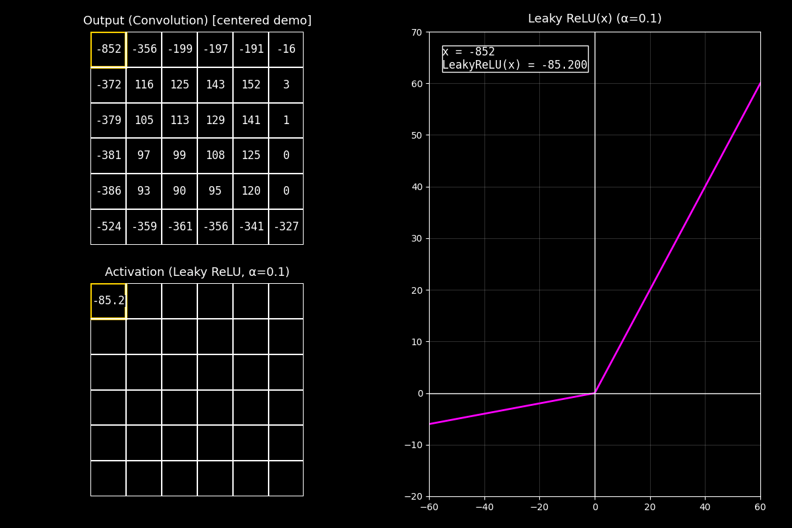
Fig. 8.15 output_leakyrelu_with_graph#
8.17.2.1. ¿Qué mirar en el GIF?#
1) Output completo (arriba)
“Arriba vemos el feature map de salida ya completo. Estos valores pueden ser positivos o negativos.”
2) Activación Leaky ReLU (abajo)
“Abajo aplicamos Leaky ReLU celda por celda. A diferencia de ReLU, los negativos no se vuelven cero: se reducen con una pendiente pequeña \(\alpha\).”
3) Gráfica (derecha)
“En la gráfica (curva fucsia) se ve esa pendiente: del lado negativo la función baja, pero más suavemente. El punto muestra el par \((x, f(x))\) para la celda actual.”
Mensaje clave
Leaky ReLU mantiene flujo de gradiente en la región negativa (pendiente \(\alpha\) en vez de 0).
Eso ayuda a evitar el problema de neuronas muertas que puede ocurrir con ReLU.
“En resumen: ReLU corta negativos a cero, mientras que Leaky ReLU deja pasar un poco de señal negativa, lo que puede mejorar el entrenamiento en algunos modelos.”
8.17.3. Función de Activación: Sigmoid sobre un feature map#
¿Qué es Sigmoid?
La función Sigmoid transforma cualquier valor real en un valor entre 0 y 1:
Por eso se interpreta fácilmente como probabilidad (especialmente en salidas binarias).
{kind=link}
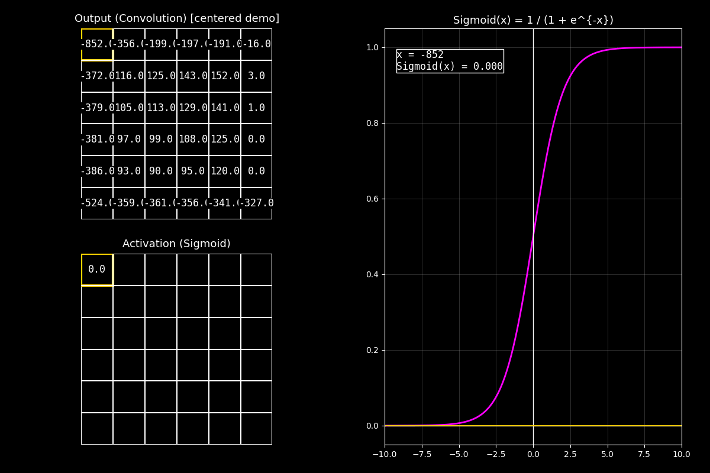
Fig. 8.16 output_sigmoid_with_graph#
8.17.3.1. Interpretación del GIF#
1) Output completo (arriba)
“Arriba vemos el feature map de salida. Para el ejemplo está centrado alrededor de 0 para que haya valores positivos y negativos.”
2) Activación Sigmoid (abajo)
“Abajo aplicamos Sigmoid celda por celda. Los valores negativos se acercan a 0.0, los positivos se acercan a 1.0, y los cercanos a cero quedan alrededor de 0.5.”
3) Gráfica (derecha)
“En la curva fucsia se ve la forma en ‘S’. El punto muestra el valor actual \(x\) y su salida \(\sigma(x)\). Notá que la salida siempre queda en el rango \([0,1]\).”
Mensaje clave
Sigmoid comprime el rango: números muy grandes (positivos) saturan cerca de 1, y números muy negativos saturan cerca de 0.
Esto es útil para probabilidades, pero en capas profundas puede causar vanishing gradients por saturación.
“En resumen: Sigmoid es ideal cuando queremos una salida tipo probabilidad entre 0 y 1; por eso aparece mucho en la capa final de clasificación binaria.”
8.17.4. Función de activación Tanh#
¿Qué es Tanh?
La función Tangente Hiperbólica (Tanh) está definida como:
Su salida está acotada en el rango: \((-1, 1)\)
Esto la convierte en una función simétrica respecto del origen, a diferencia de Sigmoid.
{kind=link}
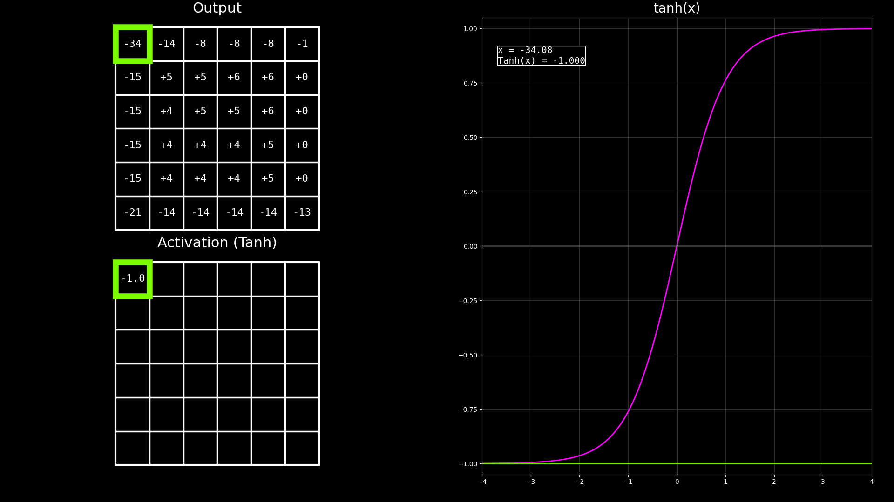
Fig. 8.17 output_tanh_with_graph#
8.17.4.1. ¿Por qué usar Tanh?#
Produce activaciones centradas en cero
Facilita la optimización por gradiente
Mantiene continuidad y derivabilidad
Amplifica diferencias cerca del cero
Históricamente fue muy utilizada en redes neuronales densas y recurrentes.
8.17.4.2. Interpretación del GIF#
En el GIF se observa:
Output de la convolución
Los valores han sido centrados y escalados para facilitar la visualización.Aplicación de Tanh
La activación se aplica celda por celda:Valores positivos se saturan hacia +1
Valores negativos se saturan hacia −1
Gráfica de la función Tanh
El punto amarillo indica el valor actual y su activación correspondiente.
Tanh actúa como un regulador suave, manteniendo las activaciones acotadas, centradas y diferenciables, lo que ayuda a la estabilidad del entrenamiento.
8.17.5. Función de activación ELU#
¿Qué es ELU?
ELU (Exponential Linear Unit) es una función de activación que se comporta como ReLU en valores positivos, pero en valores negativos usa una curva exponencial suave en lugar de cortar de golpe. Esto ayuda a mantener activaciones más estables y cercanas a cero.
{kind=link}
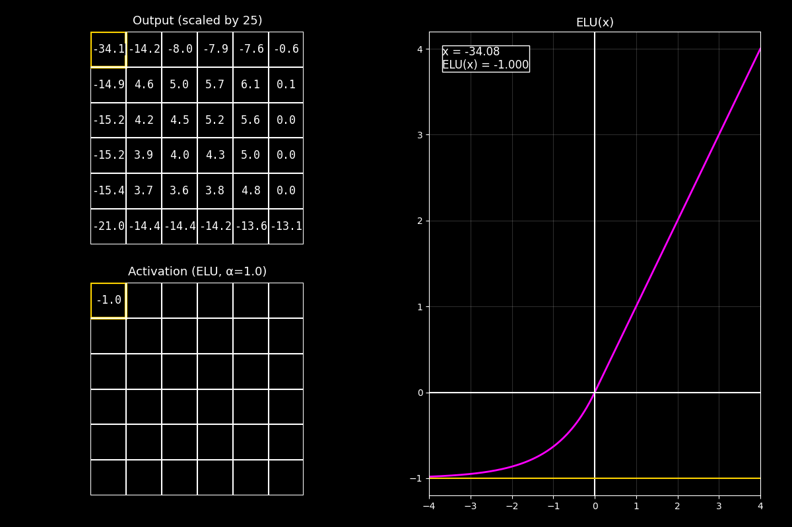
Fig. 8.18 output_elu_with_graph#
8.17.5.1. Definición#
Para un parámetro \(\alpha\) \(>\) \(0\), ELU se define como:
Propiedades rápidas:
En positivos: salida lineal (como identidad).
En negativos: salida se acerca a \(-\alpha\) cuando \(x \to -\infty\).
8.17.5.2. Intuición (por qué no solo ReLU)#
ReLU anula todo lo negativo: \(\max(0,x)\).
ELU en cambio deja pasar negativos pero “controlados”, de forma suave.
Esto puede ayudar porque:
reduce el “corte” brusco en 0 (más suavidad en gradientes),
empuja la media de activaciones hacia valores cercanos a 0,
evita algunas situaciones tipo “neurona muerta” (aunque no siempre la elimina por completo).
8.17.5.3. Interpretación del GIF#
1) Output (arriba)
“Arriba está el feature map antes de la activación. En el ejemplo está centrado/escalado para que sea fácil ver positivos y negativos.”
2) Activación ELU (abajo)
“Abajo aplicamos ELU celda por celda. Los positivos quedan prácticamente iguales.
Los negativos se transforman con una exponencial y se van acercando a un piso: \(-\alpha\).”
3) Gráfica (derecha)
“La curva fucsia muestra la parte lineal en positivos y la parte exponencial en negativos.
El punto amarillo marca el valor actual \(x\) y su salida \(\mathrm{ELU}(x)\).”
Mensaje clave
ELU es una alternativa a ReLU cuando queremos suavidad y un manejo más “amigable” de valores negativos: no los elimina de golpe, sino que los comprime gradualmente hacia un mínimo \(-\alpha\).
“En resumen: ELU mantiene la simplicidad de ReLU en positivos, pero reemplaza el corte negativo por una transición exponencial suave, lo que puede mejorar estabilidad y flujo de gradientes en ciertas redes.”
8.17.6. Función de activación GELU#
¿Qué es GELU?
GELU (Gaussian Error Linear Unit) es una función de activación suave que “deja pasar” valores en función de qué tan probable es su magnitud bajo una distribución normal.
En vez de cortar en 0 como ReLU, GELU hace una transición gradual (soft gating).
{kind=link}
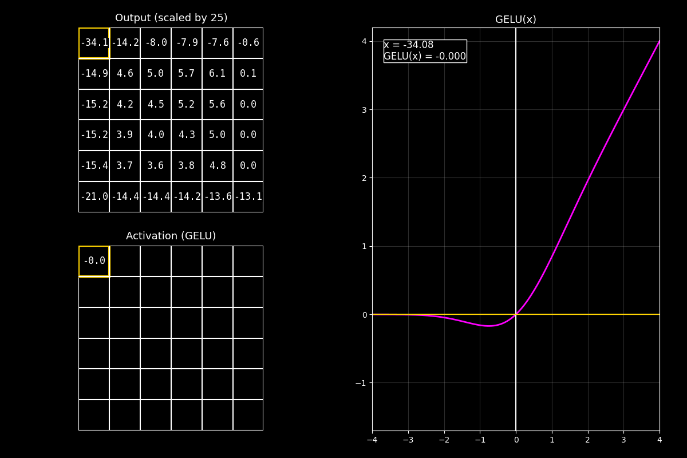
Fig. 8.19 output_gelu_with_graph#
8.17.6.1. Definición (idea matemática)#
Una forma común de escribir GELU es:
donde \(\Phi(x)\) es la CDF de una normal estándar (la probabilidad de que una variable gaussiana sea \(\le x\)).
Interpretación simple:
Si \(x\) es muy negativo, \(\Phi(x)\approx 0\) → la salida se acerca a 0.
Si \(x\) es muy positivo, \(\Phi(x)\approx 1\) → la salida se parece a \(x\).
Cerca de 0, la activación es suave (no hay “esquina”).
8.17.6.2. Fórmula exacta y aproximación práctica#
La forma exacta también se expresa con la función error:
En implementaciones suele usarse esta aproximación (muy habitual en deep learning):
8.17.6.3. Interpretación del GIF#
1) Output (arriba)
“Arriba vemos el feature map (o matriz de salida) antes de activar. Lo ideal es que tenga valores positivos y negativos para ver el efecto.”
2) Activación GELU (abajo)
“Abajo aplicamos GELU celda por celda. A diferencia de ReLU, los negativos no se anulan de golpe: se atenúan suavemente.”
3) Curva (derecha)
“La curva fucsia muestra que GELU se parece a una identidad en positivos, y se va apagando en negativos, pero sin el ‘corte’ abrupto.”
Mensaje clave
GELU funciona como una compuerta suave (soft gate): en lugar de decidir “pasa/no pasa” con un umbral, pondera cuánto pasa cada valor. Esto suele ayudar en modelos profundos porque mantiene derivadas más suaves.
8.17.6.4. ¿Dónde se usa mucho?#
GELU es muy común en Transformers (por ejemplo, familias tipo BERT/GPT), especialmente en las capas feed-forward, porque combina:
suavidad (gradientes más estables)
buena performance empírica
comportamiento parecido a ReLU, pero más “probabilístico”
“En resumen: GELU es una activación suave que actúa como una compuerta gaussiana; deja pasar más los valores positivos y atenúa los negativos de forma gradual, lo que la hace muy popular en Transformers.”
8.17.7. Función de activación Swish#
¿Qué es Swish?
Swish es una función de activación suave y muy usada en redes modernas.
A diferencia de ReLU, no corta los negativos de golpe: los deja pasar atenuados.
{kind=link}
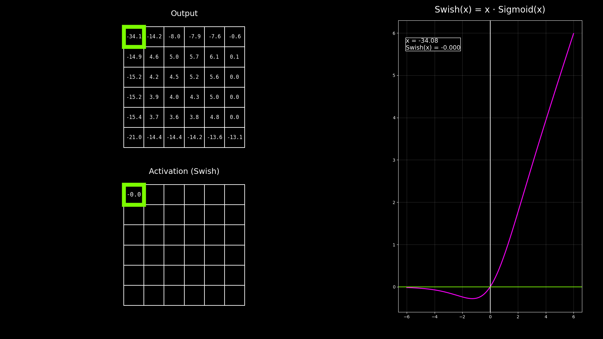
Fig. 8.20 output_swish_with_graph#
8.17.7.1. Definición#
Swish se define como:
donde \(\sigma(x)\) es la función sigmoide:
Intuición simple:
Si \(x\) es muy negativo, \(\sigma(x)\approx 0\) → Swish \(\approx 0\) (pero suave).
Si \(x\) es muy positivo, \(\sigma(x)\approx 1\) → Swish \(\approx x\).
8.17.7.2. Interpretación del GIF#
1) Output (arriba)
“Arriba vemos la matriz de salida antes de activar (centrada/escalada para que se vean bien positivos y negativos).”
2) Activación Swish (abajo)
“Abajo aplicamos Swish celda por celda: cada valor se multiplica por su sigmoide.
Eso hace que los negativos no desaparezcan, sino que queden ‘apagados’.”
3) Curva (derecha)
“La curva fucsia muestra que Swish se parece a una identidad en positivos,
y en negativos se acerca suavemente a 0. El punto amarillo marca el valor actual.”
Mensaje clave
Swish combina “dejar pasar” (identidad) con “filtrar suavemente” (sigmoide).
Por eso suele funcionar muy bien en redes profundas: mantiene gradientes suaves y evita cortes abruptos.
“Swish es como una ReLU suave: en positivos se comporta casi lineal, y en negativos atenúa sin cortar, lo que ayuda a la estabilidad en modelos profundos.”
8.17.8. Función de activación Softmax#
¿Por qué Softmax es “especial”?
Softmax no se aplica a un solo número, sino a un vector completo (por ejemplo, las salidas para varias clases).
Convierte ese vector en probabilidades que suman 1.
{kind=link}
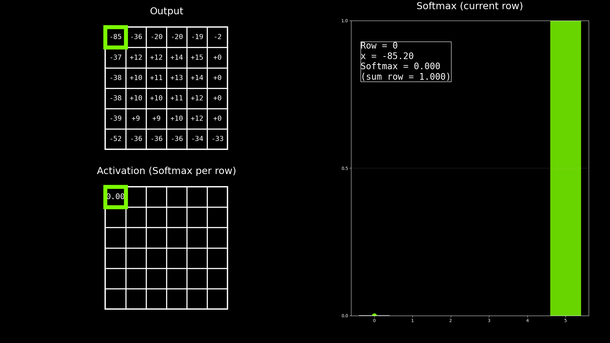
Fig. 8.21 output_softmax_with_graph#
8.17.8.1. Definición#
Dado un vector
la función Softmax se define para cada componente (i) como
Propiedad clave:
por lo que sus salidas pueden interpretarse como probabilidades.
8.17.8.2. ¿Cómo leer el GIF (guion de voz)#
En este GIF se aplica Softmax por fila (cada fila funciona como un vector).
1) Output (arriba)
“Arriba están los valores ‘logits’ (centrados/escalados). No son probabilidades todavía.”
2) Softmax (abajo)
“Abajo vemos las probabilidades: en cada fila, los valores se transforman para que sumen 1.”
3) Barras (derecha)
“El gráfico de barras fucsia muestra la distribución Softmax de la fila actual.
El punto amarillo y el borde resaltado indican el elemento que estoy animando.”
Idea clave
Softmax compara todos los valores del vector entre sí: si uno es mayor, su probabilidad crece, y las demás bajan para que la suma siga siendo 1.
8.17.8.3. ¿Dónde aparece Softmax en redes?#
Softmax se usa típicamente al final de un clasificador multiclase:
La red produce logits (valores reales).
Softmax los convierte en probabilidades por clase.
Luego se usa una pérdida como cross-entropy para entrenar.
“Softmax transforma un conjunto de salidas en una distribución de probabilidades; por eso es la activación típica en la última capa de clasificación multiclase.”
8.18. Pooling#
En muchas arquitecturas, después de la activación viene el pooling (por ejemplo MaxPool), que reduce el tamaño espacial del mapa manteniendo las respuestas más fuertes. En el próximo paso podemos visualizar cómo el pooling toma bloques del mapa activado y se queda con máximos.
¿Qué es el pooling en una CNN?
En redes neuronales convolucionales (CNN), el pooling es una operación de submuestreo que reduce la resolución espacial (alto y ancho) de un feature map. Su objetivo es condensar información manteniendo los patrones relevantes, a la vez que disminuye el costo computacional y mejora la robustez frente a pequeñas variaciones espaciales.
8.18.1. Contexto narrativo#
Después de una convolución y una función de activación, los feature maps pueden contener respuestas fuertes a bordes, texturas y formas.
El pooling actúa como un resumen local: en vez de conservar cada valor, agrupa regiones pequeñas y produce una representación más compacta.
En esta sección vamos a comparar dos tipos clásicos:
Max Pooling: conserva la activación más alta de cada ventana.
Average Pooling: conserva el promedio de los valores de cada ventana.
8.18.2. 2. Max Pooling (el más utilizado)#
8.18.2.1. Descripción#
El Max Pooling selecciona el valor máximo dentro de una ventana local (por ejemplo 2×2).
Conceptualmente, esto equivale a preguntarse: “¿Cuál es la evidencia más fuerte de este patrón en esta región?”
En visión por computadora, esta decisión suele ser efectiva porque las activaciones más altas tienden a corresponder a rasgos distintivos: bordes marcados, esquinas o texturas con fuerte respuesta del filtro.
Idea clave: Max Pooling favorece la preservación de picos (respuestas fuertes), y por eso es el más popular en muchas CNNs.
{kind=link}
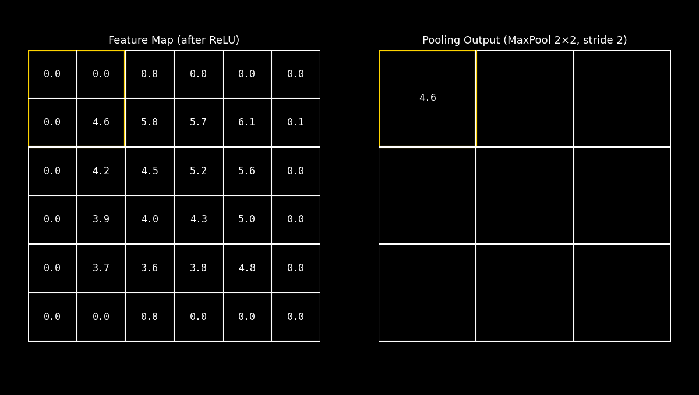
Fig. 8.22 maxpool_demo#
8.18.3. Average Pooling#
8.18.3.1. Descripción#
El Average Pooling calcula el promedio dentro de la ventana local.
En lugar de conservar el pico más intenso, produce un resumen que representa el nivel medio de activación en esa región.
{kind=link}
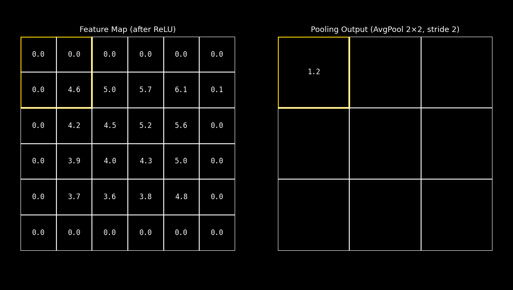
Fig. 8.23 avgpool_demo#
Esta estrategia tiende a suavizar la señal: reduce el impacto de valores extremos y puede conservar mejor información distribuida, aunque a costa de perder el énfasis en las respuestas más fuertes.
Idea clave: Average Pooling prioriza la tendencia general de la región, y suele verse como un enfoque más “suave” frente al Max Pooling.
8.18.3.2. Comparación entre Max Pooling y Average Pooling#
En síntesis, Max Pooling enfatiza las activaciones dominantes y suele destacar rasgos fuertes, mientras que Average Pooling suaviza la respuesta y resume la activación promedio local.
Ambos reducen la dimensión espacial y ayudan a construir representaciones progresivamente más compactas a medida que la red profundiza.
8.18.4. Otros poolings#
Pooling más allá de Max y Average
Además de Max Pooling y Average Pooling, existen otros tipos de pooling que se utilizan en contextos más específicos dentro del aprendizaje profundo. Uno de los más importantes es el Global Pooling (Global Max Pooling y Global Average Pooling), que aplica la operación de pooling sobre toda la dimensión espacial de una feature map, reduciéndola a un único valor por canal. Este enfoque se usa con frecuencia en las últimas capas de redes convolucionales modernas, ya que reduce drásticamente el número de parámetros, ayuda a evitar el sobreajuste y permite conectar directamente las características aprendidas con capas de clasificación sin necesidad de capas totalmente conectadas.
Otras variantes de Pooling
Existen también técnicas menos frecuentes pero conceptualmente relevantes, como el L2 Pooling, que calcula la raíz cuadrada del promedio de los valores al cuadrado dentro de cada ventana, y el Stochastic Pooling, donde el valor seleccionado se elige aleatoriamente según una distribución de probabilidad basada en la magnitud de las activaciones. Estas variantes buscan introducir mayor robustez o regularización en el modelo, aunque en la práctica su uso es más limitado. En aplicaciones reales, Max Pooling y Average Pooling siguen siendo los estándares debido a su simplicidad, interpretabilidad y excelente desempeño empírico.
Pooling más utilizados:
Max Pooling
Average Pooling
Global Max Pooling
Global Average Pooling (GAP)
Otras variantes de pooling:
Min Pooling
Sum Pooling
L2 Pooling
Stochastic Pooling
Fractional Pooling
Adaptive Pooling (Adaptive Max / Adaptive Average)
Mixed Pooling (combinación de Max y Average)
Spatial Pyramid Pooling (SPP)
8.19. Capas convolucionales#
En la siguiente animación se ilustra de manera explícita el flujo de procesamiento correspondiente a la etapa de aprendizaje de características (feature learning) de una red neuronal convolucional, a partir de una entrada multicanal. En esta etapa, cada canal de la imagen de entrada es procesado simultáneamente mediante filtros convolucionales que actúan como detectores locales de patrones, cuyos resultados se combinan para producir mapas de características. Posteriormente, a estos mapas se les aplica una función de activación —en este caso ReLU— que introduce no linealidad y permite modelar relaciones más complejas, y una operación de pooling que reduce la resolución espacial preservando la información más relevante. El objetivo de esta secuencia de operaciones no es tomar una decisión final, sino transformar progresivamente los datos originales en representaciones internas más abstractas y discriminativas, que luego serán utilizadas por la etapa de decisión de la red.
{kind=link}
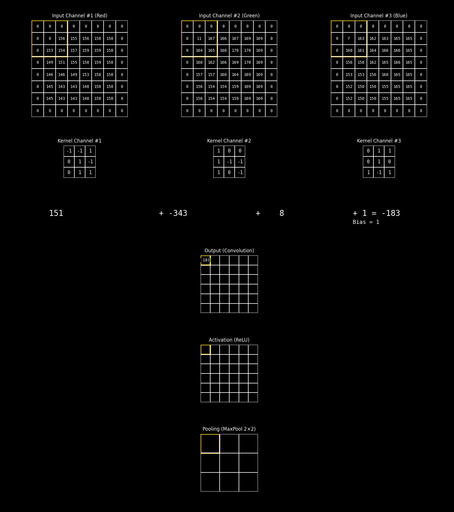
Fig. 8.24 convolution_same_relu_pool#
8.19.1. Salida de Convoluciones#
El tamaño de salida de una convolución 1D (por dimensión) viene dado por: \(\text{Salida} \;=\; \frac{N + 2P - K}{S} + 1\)
donde:
\(N\): tamaño de entrada
\(K\): tamaño del filtro (kernel)
\(P\): padding
\(S\): stride
(En 2D se aplica la misma fórmula por separado para alto y ancho.)
8.20. Convoluciones secuenciales: una cadena de salidas \(O\)#
En una CNN real, las convoluciones no aparecen aisladas. Son capas que se encadenan: la salida de una se convierte en la entrada de la siguiente.
Podemos representarlo de forma simplificada como:
\( I_0 \; \xrightarrow{\text{conv}} \; O_1 \; \xrightarrow{\text{conv}} \; O_2 \; \xrightarrow{\text{conv}} \; O_3. \)
En el GIF 3D correspondiente se visualiza:
un primer bloque de entrada \(I_0\),
un filtro que recorre \(I_0\) y genera \(O_1\),
luego el mismo filtro (o un filtro distinto) recorriendo \(O_1\) para producir \(O_2\),
y finalmente una tercera aplicación que produce \(O_3\).
Esta cadena muestra con claridad que:
hasta que no se genera completamente \(O_1\), no se puede aplicar la siguiente convolución sobre ella,
y que las CNN construyen representaciones de creciente complejidad encadenando operaciones locales sencillas.
{kind=link}
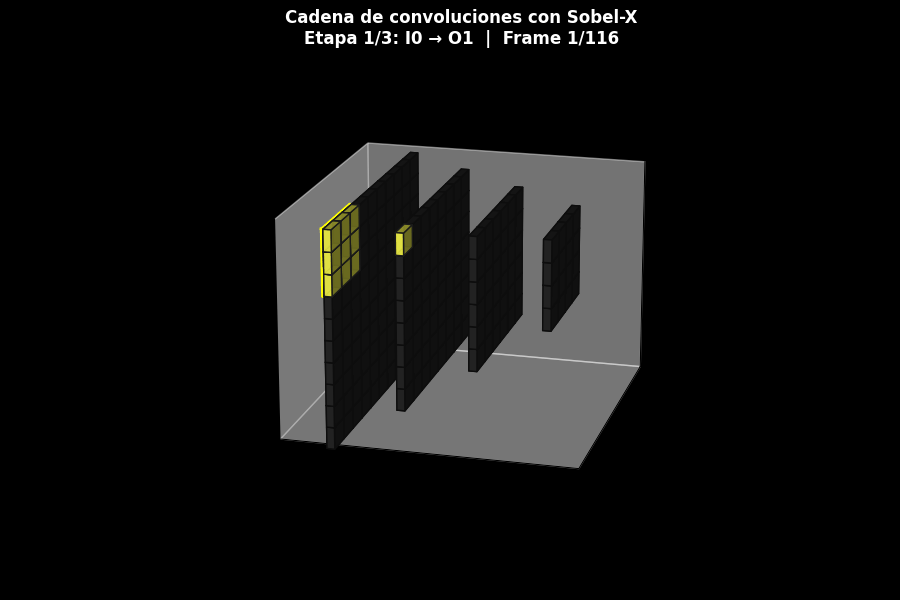
Fig. 8.25 Multiples canales#
8.21. Múltiples filtros y mapas de activación#
Hasta acá vimos que un filtro sobre un parche multicanal procesa cada canal por separado, suma los resultados y produce un único mapa de activación. Pero una capa convolucional no tiene un solo filtro; tiene muchos, aplicándose en paralelo. Si hay K filtros, cada uno genera un mapa de características, y en conjunto obtenemos K mapas. La salida de una capa convolucional es un tensor tridimensional: alto por ancho por cantidad de filtros (H x W x K), donde K es la nueva profundidad o número de canales.
Ahora viene un punto clave: la siguiente convolución no recibe una imagen RGB, sino este conjunto de mapas de características. Es una entrada multicanal donde los canales representan características aprendidas, no colores. Cada mapa codifica respuestas a bordes, texturas o patrones complejos. Así, una capa convolucional transforma canales físicos en canales semánticos, y la siguiente capa opera directamente sobre esas características.
En síntesis, cada capa aplica múltiples filtros y produce un conjunto de mapas de características. Estas representaciones son las que la siguiente capa toma para seguir combinando y transformando las características. Sin embargo, la convolución en sí es una operación lineal. Para modelar relaciones complejas, es imprescindible un paso más: las funciones de activación, que transforman estas respuestas inmediatamente después de la convolución y son clave en el aprendizaje profundo. Ahora vamos a abordar ese tema.
8.22. Estrategias de aplanamiento (Flatten)#
Sí — hay distintas formas (o “estrategias”) de aplanamiento, aunque la idea básica sea siempre la misma: convertir un tensor en un vector.
No son “fórmulas” distintas en el sentido matemático profundo, sino distintas decisiones de cómo colapsar la información espacial. Las más comunes son:
Flatten clásico
Se reordena todo el tensor \(H \times W \times K\) en un único vector de longitud:\(H \cdot W \cdot K\)
Esto pierde completamente la estructura espacial (posición).
Global pooling (average o max)
Primero se agrega la información espacial y se obtiene un vector de tamaño \(K\) (un valor por mapa de activación).
Reduce muchísimo la dimensión y conserva solo la presencia global de cada patrón.Variantes intermedias (por bloques / regiones / parches)
Se aplana por “bloques” o regiones, manteniendo algo de estructura espacial.
Conceptualmente, todas son “aplanamientos”, pero cada una decide cuánta información espacial se sacrifica antes de entrar a la etapa fully connected.
# (Opcional) Ejemplos rápidos de dimensiones
# Imaginá una salida conv de tamaño H x W x K:
H, W, K = 7, 7, 64
flatten_len = H * W * K # Flatten clásico
global_pool_len = K # Global Average/Max Pooling
flatten_len, global_pool_len
8.23. Capa Fully Connected.#
En esta sección explicaremos las partes principales de una red fully connected utilizando una arquitectura simple: Flatten → Dense(10) → Dense(7) → Dense(3) de neuronas por capa suele ser mucho mayor que diez, esta estructura reducida nos permitirá comprender con claridad todos los componentes de una red totalmente conectada, las operaciones matemáticas que se realizan en cada etapa y cómo fluye la información a través de la red.
{kind=link}
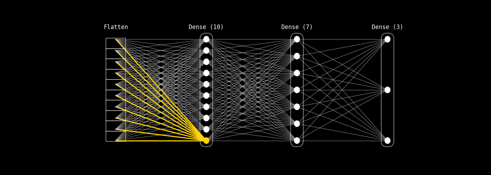
Fig. 8.26 fully_connected_architecture_only#
8.23.1. Capa Fully Connected (Dense): explicación paso a paso (con matrices)#
En esta sección vamoss a poder acompañar el GIF del ejemplo Flatten → Dense(10) → Dense(7) → Dense(3) y entender qué está pasando en términos de vectores, matrices de pesos y bias.
Idea clave: una capa fully connected toma un vector de entrada y calcula una combinación lineal:
\(\mathbf{z} = \mathbf{W}\mathbf{x} + \mathbf{b}\)
y luego (típicamente) aplica una función de activación:
\(\mathbf{a} = f(\mathbf{z})\)
¿Qué es una capa Fully Connected?
Una capa fully connected (o dense) conecta todas las neuronas de entrada con todas las neuronas de salida. Matemáticamente, es una transformación lineal del tipo
seguida (normalmente) por una función de activación
\(\mathbf{a}=f(\mathbf{z})\).
En el GIF, las conexiones dibujadas representan la topología (todas con todas), mientras que los valores en las matrices muestran los pesos reales usados en los productos.
8.23.1.1. 1) Vector de entrada: el Flatten#
En visión por computadora, antes de una capa densa solemos tener un tensor (por ejemplo una feature map). Para conectarlo a una capa densa, lo convertimos en un vector columna:
\(\mathbf{x}= \begin{bmatrix} x_1\\ x_2\\ \vdots\\ x_{n} \end{bmatrix} \quad\text{(en el ejemplo, }n=10\text{)}\)
En el GIF, este vector aparece como la primera columna (Flatten).
8.23.1.2. 2) Matriz de pesos \(\mathbf{W}\) y bias \(\mathbf{b}\)#
Para una capa Dense con \(m\) neuronas de salida y \(n\) entradas, los parámetros son:
\(\mathbf{W}\in\mathbb{R}^{m\times n}\) (una fila por neurona de salida)
\(\mathbf{b}\in\mathbb{R}^{m\times 1}\)
\(\mathbf{W}= \begin{bmatrix} w_{1,1} & w_{1,2} & \cdots & w_{1,n}\\ w_{2,1} & w_{2,2} & \cdots & w_{2,n}\\ \vdots & \vdots & \ddots & \vdots \\ w_{m,1} & w_{m,2} & \cdots & w_{m,n} \end{bmatrix} \qquad \mathbf{b}= \begin{bmatrix} b_1\\ b_2\\ \vdots\\ b_m \end{bmatrix}\)
En el GIF se agregó una columna extra a la izquierda mostrando la matriz \(\mathbf{W}\) completa para que se vea de dónde sale el vector de pesos \(\mathbf{w}_j\) (la fila resaltada).
8.23.1.3. 3) Cálculo de una neurona (fila \(j\) de \(\mathbf{W}\))#
La neurona \(j\) toma la fila \(j\) de \(\mathbf{W}\) (la llamamos \(\mathbf{w}_j^\top\) ) y calcula:
\(z_j = \sum_{i=1}^{n} x_i\; w_{j,i} + b_j\)
En forma vectorial:
\(z_j = \mathbf{w}_j^\top \mathbf{x} + b_j\)
8.23.1.3.1. Desglose que ves en el panel inferior del GIF#
\(\mathbf{x}\) (vector de entrada)
\(\mathbf{w}_j\) (fila \(j\) de la matriz \(\mathbf{W}\))
Producto elemento a elemento (mostrado como \( \mathbf{x} \odot \mathbf{w}_j\))
Suma \(\Sigma(\mathbf{x}\odot \mathbf{w}_j)\)
Bias \(+b_j\)
Resultado \(z_j\)
8.23.1.4. 4) Vector de salida de la capa#
La capa calcula todas las neuronas de salida, por eso el resultado es un vector:
\(\mathbf{z}\) = \(\begin{bmatrix} z_1\\ z_2\\ \vdots\\ z_m \end{bmatrix}\) = \(\mathbf{W}\mathbf{x}+\mathbf{b}\)
En el ejemplo:
Primera capa densa: \(m=10\), \(n=10\) \(\Rightarrow \mathbf{W}_1\in\mathbb{R}^{10\times 10}\)
Segunda capa densa: \(m=7\), \(n=10\) \(\Rightarrow \mathbf{W}_2\in\mathbb{R}^{7\times 10}\)
Tercera capa densa: \(m=3\), \(n=7\) \(\Rightarrow \mathbf{W}_3\in\mathbb{R}^{3\times 7}\)
Por eso en el GIF vas viendo sucesivamente \(\mathbf{W}_1\), luego \(\mathbf{W}_2\), luego \(\mathbf{W}_3\).
8.23.1.5. 5) ¿Dónde entra la activación (por ejemplo ReLU)?#
Luego de calcular \(\mathbf{z}\), se aplica una función \(f\) elemento a elemento:
\(\mathbf{a}=f(\mathbf{z})\)
Para ReLU:
\(\mathrm{ReLU}(z)=\max(0,z)\)
Entonces:
\(a_j = \max(0, z_j)\)
En el ejemplo del GIF, las primeras dos capas usan ReLU:
\(\mathbf{a}_1=\mathrm{ReLU}(\mathbf{z}_1),\qquad \mathbf{a}_2=\mathrm{ReLU}(\mathbf{z}_2)\)
y la última capa muestra típicamente los logits (sin activación) antes de softmax en clasificación:
\(\mathbf{z}_3 = \mathbf{W}_3\mathbf{a}_2+\mathbf{b}_3\)
8.23.1.6. 6) Resumen del flujo completo (el del GIF)#
Flatten \(\to \mathbf{x}=\mathbf{a}_0\)
Dense(10)
\(\mathbf{z}_1=\mathbf{W}_1\mathbf{a}_0+\mathbf{b}_1,\quad \mathbf{a}_1=\mathrm{ReLU}(\mathbf{z}_1)\)
Dense(7)
\(\mathbf{z}_2=\mathbf{W}_2\mathbf{a}_1+\mathbf{b}_2,\quad \mathbf{a}_2=\mathrm{ReLU}(\mathbf{z}_2)\)
Dense(3)
\(\mathbf{z}_3=\mathbf{W}_3\mathbf{a}_2+\mathbf{b}_3\)
Si este fuera un problema de clasificación, normalmente después aplicarías:
\(\hat{\mathbf{p}}=\mathrm{softmax}(\mathbf{z}_3)\)
8.23.2. Paso a paso: fully_connected_demo_with_W_#
Una capa fully connected en una red neuronal convolucional (CNN) constituye el mecanismo mediante el cual la información extraída localmente por las capas convolucionales se integra en una representación global adecuada para la toma de decisiones. A diferencia de las convoluciones, que operan sobre estructuras espaciales y preservan relaciones locales, una capa fully connected recibe como entrada un único vector, típicamente obtenido mediante el aplanamiento (flattening) de los mapas de activación producidos por las capas convolucionales precedentes. Este proceso transforma una representación multidimensional en un espacio vectorial, en el cual cada componente codifica una característica aprendida durante las etapas previas de la red.
En una capa fully connected, cada neurona está conectada a todas las neuronas de la capa anterior, lo que implica que no existe restricción espacial en las conexiones. Estas conexiones se parametrizan mediante pesos aprendibles, y cada neurona dispone además de un término de sesgo (bias). Desde el punto de vista computacional, cada neurona calcula una combinación lineal de las componentes del vector de entrada, ponderadas por sus respectivos pesos, produciendo un valor escalar denominado pre-activación. Esta operación puede interpretarse como una proyección del vector de entrada sobre un vector de pesos específico, seguida de un desplazamiento controlado por el bias.
Antes de producir su salida final, cada neurona aplica una función de activación, cuyo propósito es transformar el valor de pre-activación y, fundamentalmente, introducir no linealidad en el modelo. Sin esta no linealidad, una red profunda colapsaría en una única transformación lineal equivalente, independientemente del número de capas. Funciones como ReLU, sigmoid o softmax cumplen distintos roles dentro de la arquitectura: ReLU es común en capas intermedias por su simplicidad y estabilidad numérica, mientras que sigmoid y softmax se emplean típicamente en capas de salida, según la naturaleza del problema abordado.
Desde una perspectiva algebraica, los pesos de una capa fully connected se organizan en una matriz, donde cada fila representa una neurona de la capa y cada columna corresponde a una componente del vector de entrada. De este modo, el cálculo simultáneo de todas las neuronas de la capa puede expresarse de forma compacta mediante una multiplicación matriz–vector, seguida de la suma del vector de bias y la aplicación de la función de activación. Esta formulación evidencia que una capa fully connected no es simplemente un conjunto de neuronas aisladas, sino una transformación lineal estructurada, aplicada de manera paralela sobre el espacio de entrada.
La capa de salida de una CNN toma el vector producido por la última capa fully connected y lo transforma en una representación directamente interpretable en el contexto del problema. En tareas de clasificación multiclase, este vector contiene tantos componentes como clases posibles, y tras aplicar una función softmax, cada componente se interpreta como una probabilidad normalizada. En clasificación binaria, suele emplearse un único valor escalar que, tras una función sigmoid, representa la probabilidad de pertenencia a la clase positiva. En problemas de regresión, el vector de salida contiene valores numéricos directos que constituyen las predicciones del modelo. Conceptualmente, esta capa final no extrae nuevas características: decide. Opera sobre una representación global ya aprendida y la proyecta al espacio semántico del problema.
En conjunto, estos mecanismos muestran que las capas convolucionales pueden entenderse como responsables de la extracción de características, mientras que las capas fully connected cumplen el rol de integración, razonamiento y decisión.
Todos estos conceptos se operacionalizan mediante herramientas del álgebra lineal, en particular vectores, matrices, productos punto y combinaciones lineales, combinadas con funciones no lineales. Con fines didácticos, en las secciones siguientes se analiza detalladamente la operatoria de una capa fully connected simple, utilizando una arquitectura compuesta por capas densas de 10, 7 y 3 neuronas.
Fig. 8.27 fully_connected_architecture_only#
En primer lugar, se describe paso a paso el cálculo correspondiente a la transición Flatten → Dense(10), y posteriormente se analiza la transición Dense(10) → Dense(7), ilustrando explícitamente las operaciones matemáticas involucradas mediante visualizaciones animadas.
8.23.2.1. Ejemplos Flatten a Dense (10)#
{kind=link}
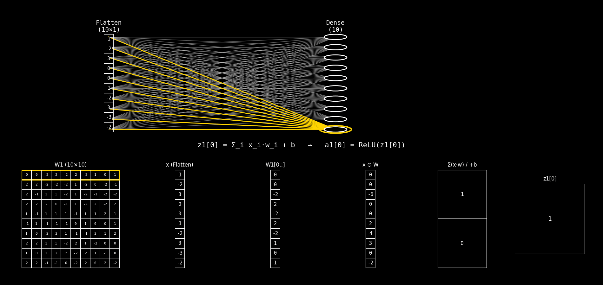
Fig. 8.28 flatten_to_dense10_step_by_step#
Explicaremos el panel inferior de la imagen. En cada frame se está calculando una neurona j de la capa Dense(10).
La neurona recibe el vector de entrada x (salida de Flatten) y calcula primero el pre-activación:
y luego (aunque el panel suele mostrar principalmente z), la activación ReLU es:
8.23.2.2. Interpretación de las columnas 3 a 6#
Asumimos que:
Columna 1:
W1 (10×10)es la matriz de pesos completa.Columna 2:
x (Flatten)es el vector de entrada (10×1).
Ahora explicamos columna por columna las restantes.
8.23.2.3. Columna 3: W1[j, :]#
Qué es: el vector de pesos de la neurona j.
Es una fila de la matriz
W1.Tiene dimensión (10×1) porque hay 10 entradas.
Cada elemento
W1[j,i]indica cuánto influyex_ien la neuronaj.
Interpretación conceptual:
“Así mira la neurona
jal vector de entrada.”
Formalmente:
8.23.2.4. Columna 4: x ⊙ W#
Qué es: el producto elemento a elemento entre:
el vector de entrada
xy el vector de pesos de la neurona
j(columna 3)
Ojo: esto todavía no suma, solo calcula las contribuciones individuales: $\( (x_0 w_0,\; x_1 w_1,\; \dots,\; x_9 w_9) \)$
Por qué sirve mostrarlo:
Hace visible que cada entrada aporta por separado.
Algunas contribuciones pueden ser 0.
Otras pueden ser positivas o negativas.
Es el paso intermedio que normalmente queda “oculto” cuando uno escribe directamente x @ w.
8.23.2.5. Columna 5: Σ(x·w) / +b#
Esta columna tiene dos filas:
Fila superior: Σ(x·w)
Es la suma de todos los productos de la columna 4.
Es el producto punto clásico: $\( \sum_{i=0}^{9} x_i \cdot W_1[j,i] \)$
Fila inferior: + b
Es el bias de la neurona
j:
Interpretación conceptual:
“La neurona agrega todas las contribuciones y después ajusta el resultado con su bias.”
8.23.2.6. Columna 6: z1[j]#
Qué es: el resultado final antes de la activación (pre-activación).
Es un escalar.
Es la entrada a ReLU.
Determina si la neurona “se enciende” o queda en 0 (por ReLU).
Luego: $\( a_1[j] = \max(0, z_1[j]) \)$
8.23.2.7. Resumen rápido#
Columna |
Qué muestra |
Rol |
|---|---|---|
3 |
|
Pesos de la neurona |
4 |
|
Contribuciones individuales |
5 |
|
Suma total y bias |
6 |
|
Pre-activación final |
8.23.2.8. explicación (Dense(10) → Dense(7))#
Idea central: ahora la entrada no es
xsinoa1
En Flatten → Dense(10) la neurona recibía el vector x (Flatten).
En Dense(10) → Dense(7) la neurona recibe como entrada a1, que es la salida activada de la capa anterior:
z1 = W1 @ a0 + b1a1 = ReLU(z1)
Es decir, la nueva capa no mira el input original, mira la representación intermedia aprendida por la capa anterior.
{kind=link}
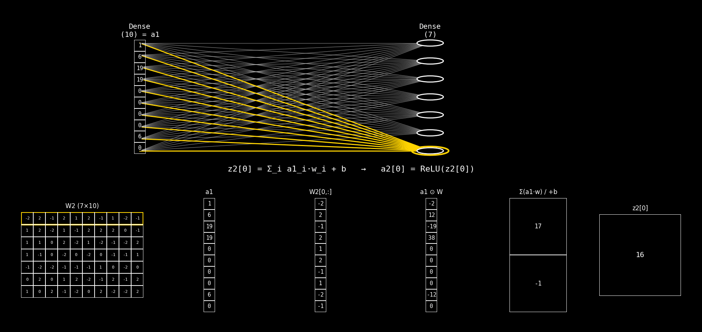
Fig. 8.29 dense10_to_dense7_step_by_step#
8.23.2.9. Qué calcula una neurona de Dense(7)#
Para cada neurona j de la capa Dense(7) se calcula:
y luego su activación:
Notá la diferencia clave: ahora el sumatorio es sobre componentes de a1 (no de x).
8.23.2.10. Explicación del panel inferior (columna por columna)#
El panel inferior mantiene la misma lógica “multiplicar → sumar → bias → z”, pero cambia qué matrices/vectores aparecen.
8.23.2.11. 1) Columna 1: W2 (7×10)#
Qué representa: la matriz de pesos de la capa Dense(7).
Tiene forma (7×10) porque:
7 neuronas en la capa actual (salida)
10 entradas desde la capa anterior (
a1tiene 10 componentes)
Lectura por filas:
Cada fila
W2[j,:]son los pesos de la neuronajde la Dense(7).
Comparación con el caso anterior:
Antes veías
W1 (10×10).Ahora ves
W2 (7×10)porque cambió el “mapa” de conexiones: 10 → 7.
8.23.2.12. 2) Columna 2: a1#
Qué representa: el vector de entrada a la capa Dense(7).
a1es la salida activada de la capa anteriorDense(10).Formalmente:
a1 = ReLU(z1).
Interpretación:
La segunda capa no trabaja con el input crudo; trabaja con lo que la primera capa “aprendió a extraer”.
Comparación con el caso anterior:
Antes la entrada era
x (Flatten).Ahora la entrada es
a1.
8.23.2.13. 3) Columna 3: W2[j, :]#
Qué representa: la fila de W2 correspondiente a la neurona j.
Es un vector de dimensión (10×1).
Contiene los pesos que multiplican a cada componente de
a1.
Comparación con el caso anterior:
Antes era
W1[j,:].Ahora es
W2[j,:].
8.23.2.14. 4) Columna 4: a1 ⊙ W#
Qué representa: el producto elemento a elemento entre:
el vector de entrada
a1y el vector de pesos
W2[j,:]
Qué cambia respecto a antes:
Antes era
x ⊙ W.Ahora es
a1 ⊙ W.
Esto muestra cómo cada componente de la representación a1 contribuye a la neurona j.
8.23.2.15. 5) Columna 5: Σ(a1·w) / +b#
Fila superior: Σ(a1·w)
Es la suma de la columna 4: $\( \sum_{i=0}^{9} a1_i \cdot W_2[j,i] \)$
Fila inferior: + b
Es el bias
b2[j].
Qué cambia respecto a antes:
El mecanismo es idéntico.
Cambia el vector: ahora sumás contribuciones basadas en
a1.
8.23.2.16. 6) Columna 6: z2[j]#
Qué representa: el pre-activación final de la neurona j de Dense(7).
Luego se aplica ReLU: $\( a_2[j] = \max(0, z_2[j]) \)$
Qué cambia respecto a antes:
Antes terminabas en
z1[j].Ahora terminás en
z2[j].
8.23.2.17. Diferencias#
Cambian los símbolos:
W1,b1,z1,x→W2,b2,z2,a1.La operación es la misma: producto elemento a elemento → suma → bias →
z.El significado conceptual cambia: ahora la capa trabaja sobre una representación intermedia (
a1), no sobre el input original.
8.23.2.18. La acción completa de una fully connected#
El ejemplo integrador presentado en la figura final siguiente muestra la acción completa de una capa fully connected como una secuencia coherente de transformaciones, en la que el vector de entrada es progresivamente procesado por capas densas sucesivas. A diferencia de los ejemplos anteriores, donde cada transición se analizó de forma aislada, esta visualización permite apreciar el comportamiento global del bloque fully connected: desde la recepción del vector aplanado (Flatten), pasando por la generación de representaciones intermedias en capas densas, hasta la obtención de un vector de salida de menor dimensión. El GIF sintetiza visualmente cómo cada capa aplica la misma operatoria básica —combinación lineal seguida de activación— pero sobre espacios vectoriales distintos, encadenando transformaciones que refinan la representación de la información.
Desde un punto de vista conceptual, esta visualización refuerza la idea de que una fully connected no debe entenderse como un conjunto de cálculos independientes, sino como una composición de funciones que actúan de manera secuencial sobre una representación global. Cada capa densa recibe como entrada el resultado activado de la capa anterior, lo que implica que las decisiones finales no dependen directamente del input original, sino de una representación progresivamente abstracta aprendida por la red. En este sentido, el GIF integrador ilustra de forma compacta cómo las operaciones del álgebra lineal —vectores, matrices, productos punto y bias— se articulan dinámicamente para convertir características extraídas por la CNN en una respuesta final en el espacio del problema, cerrando el proceso de razonamiento y decisión de la red.
{kind=link}
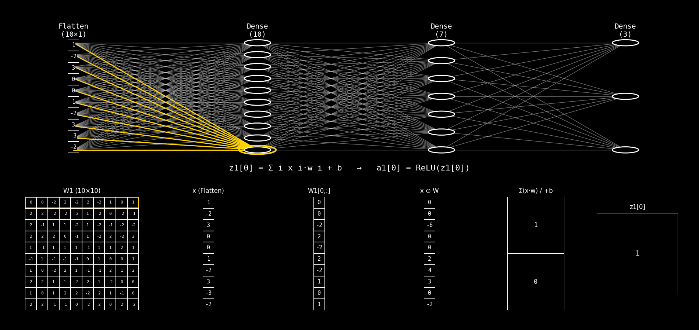
Fig. 8.30 fully_connected_demo_with_W#
8.23.3. Propósitos de una fully connected#
En una red neuronal convolucional, las capas finales —conocidas como fully connected— cumplen un rol fundamental: traducen las características abstractas extraídas por las capas convolucionales en decisiones, estimaciones o predicciones concretas. Mientras las convoluciones detectan patrones locales como bordes, texturas o formas, la fully connected integra toda esa información en una representación global, similar a cómo el cerebro humano combina señales visuales para interpretar una escena completa.
Uno de los usos más conocidos de esta etapa es la clasificación, donde la red determina a qué categoría pertenece una imagen. Sin embargo, su alcance va mucho más allá. En tareas de regresión, por ejemplo, la fully connected permite predecir valores continuos. Esto hace posible estimar magnitudes físicas a partir de imágenes, como la temperatura de la superficie terrestre observada por satélites, la concentración de contaminantes en el aire o incluso la profundidad de un objeto en una escena tridimensional.
Otra aplicación clave es la predicción de probabilidades. En lugar de dar una única respuesta, la red puede asignar una probabilidad a distintos eventos posibles. Esto resulta esencial en contextos donde la incertidumbre es parte del problema, como la detección temprana de enfermedades, la evaluación de riesgos ambientales o el análisis de fallas en sistemas industriales. La fully connected actúa, en estos casos, como un estimador de confianza.
Además, estas capas pueden generar embeddings, es decir, representaciones numéricas compactas que describen la información esencial de una imagen. Estos vectores no clasifican directamente, pero permiten comparar similitudes, agrupar datos, identificar anomalías o alimentar otros modelos de inteligencia artificial. Así, una CNN puede aprender no solo a reconocer, sino también a organizar y relacionar la información visual.
En definitiva, la etapa fully connected es el puente entre la percepción y la interpretación. Se afirma que la etapa fully connected es el puente entre la percepción y la interpretación porque es el punto de la red donde las características visuales detectadas dejan de ser simples patrones locales y pasan a adquirir significado global. Las capas convolucionales se limitan a responder a estímulos —bordes, texturas, formas— de manera distribuida en el espacio, sin comprender qué representan en conjunto. Al aplanar esa información y procesarla mediante capas densas, la red integra todas esas señales en una única representación abstracta, capaz de sostener una decisión, una estimación o una inferencia. En ese momento, la red deja de “ver” la imagen y comienza a “entenderla” en términos de categorías, valores o probabilidades, convirtiendo la percepción en interpretación.
Gracias a ella, una red convolucional no se limita a “ver”, sino que puede medir, inferir, anticipar y decidir, adaptando su salida a la naturaleza del problema: categorías, valores numéricos, probabilidades o representaciones abstractas. Es allí donde la visión computacional se transforma en conocimiento accionable.
8.23.4. Tips integradores#
Una CNN puede operar sobre imágenes con múltiples canales, donde cada canal puede representar una banda espectral distinta (por ejemplo, en imágenes satelitales).
En la primera capa convolucional, se aplican múltiples filtros en forma simultánea sobre todos los canales de la imagen de entrada.
Cada filtro genera un mapa de activación, que es la salida espacial resultante de aplicar ese filtro mediante la operación de convolución.
Como los filtros se aplican en forma simultánea, la salida de una capa convolucional es un conjunto de mapas de activación, uno por cada filtro.
Ese conjunto de mapas de activación se organiza como un tensor, cuya profundidad coincide con la cantidad de filtros de la capa.
A partir de la segunda capa convolucional en adelante, los filtros ya no se aplican sobre una imagen, sino sobre el conjunto completo de mapas de activación producido por la capa anterior, generando nuevos mapas de activación.
Un filtro convolucional tiene tantos canales como la profundidad de la entrada a la que se aplica, ya sea una imagen multicanal o un conjunto de mapas de activación.
La operación de convolución consiste en realizar multiplicaciones elemento a elemento entre el filtro y la ventana de la entrada en cada canal, y luego sumar los resultados de todos los canales para obtener un único valor espacial.
Por este motivo, un solo filtro produce un único mapa de activación, integrando simultáneamente la información de todos los canales de entrada.
Una capa convolucional no selecciona un filtro, sino que aplica todos sus filtros en paralelo sobre la entrada.
Los filtros de distintas capas no se reutilizan, cada capa aprende su propio conjunto de filtros durante el entrenamiento.
Lo que se reutiliza entre capas no son los filtros, sino las representaciones, es decir, los mapas de activación producidos por la capa anterior.
En una CNN, el término “canal” no siempre representa una banda física, sino que a partir de las capas internas representa características aprendidas.
Cada capa convolucional construye una nueva representación de la entrada, combinando y transformando los mapas de activación de la capa anterior.
Las capas convolucionales generan una jerarquía de representaciones, donde las primeras capturan patrones simples y las siguientes combinan esos patrones en estructuras más complejas.
Aunque los mapas de activación pueden visualizarse como imágenes, no representan imágenes reales, sino respuestas internas de la red a ciertos patrones.
Cada mapa de activación conserva la estructura espacial de la entrada, lo que permite a la CNN mantener información de posición a lo largo de las capas.
La combinación de convoluciones y mapas de activación permite a la CNN aprender representaciones jerárquicas, pasando de patrones simples a estructuras cada vez más abstractas.
La estructura convolucional introduce un sesgo inductivo, asumiendo que los patrones locales y su organización espacial son relevantes para interpretar la imagen.
El uso de filtros compartidos espacialmente reduce drásticamente la cantidad de parámetros, haciendo posible entrenar modelos profundos de manera eficiente.
La combinación de convoluciones, mapas de activación y jerarquía de capas permite a la CNN generalizar, aprendiendo patrones que se repiten en distintas regiones de la imagen.
El tamaño espacial depende de tres cosas: tamaño del filtro, stride y padding.
Una capa fully connected recibe como entrada un único vector, normalmente obtenido al aplanar los mapas de activación de la CNN.
Cada neurona de una capa fully connected está conectada a todas las neuronas de la capa anterior, mediante pesos aprendibles.
Cada neurona calcula una combinación lineal de sus entradas ponderadas por pesos, y produce un valor de salida (antes o después de aplicar una función de activación).
Antes de producir su salida, cada neurona puede aplicar una función de activación, que transforma el valor que calculó.
Una función de activación introduce no linealidad en la red, permitiendo que el modelo aprenda relaciones complejas y no solo combinaciones lineales.
Ejemplos comunes de funciones de activación son ReLU, sigmoid y softmax, y se eligen según el rol de la capa (intermedia o de salida).
En una capa fully connected, los pesos se organizan como una matriz donde cada fila representa una neurona y cada columna corresponde a una componente del vector de entrada.
La última capa de salida toma el vector producido por la última fully connected y lo transforma en una interpretación final del problema. El significado del vector final depende de la tarea: • Clasificación multiclase: el vector tiene tantas componentes como clases; cada componente es un score y, tras aplicar softmax, se interpreta como la probabilidad de cada clase (todas suman 1). • Clasificación binaria: el vector suele tener un solo valor; tras sigmoid, se interpreta como la probabilidad de la clase positiva. • Regresión: el vector contiene valores numéricos directos (sin softmax/sigmoid), que son las predicciones. Conceptualmente, esa capa final no extrae nuevas características: decide. Toma la representación global ya aprendida (el vector) y la convierte en una respuesta en el espacio del problema (clases, probabilidades o valores). Por eso se dice que la CNN “ve” con las convoluciones y la fully connected razona y decide al final.
8.23.4.1. El aprendizaje de la CNN#
Hasta aquí se ha descrito con detalle cómo una red neuronal convolucional calcula una salida a partir de un dato de entrada, es decir, cómo se propaga la información hacia adelante (forward pass) a través de capas convolucionales, de aplanamiento y fully connected. Sin embargo, el comportamiento esencial de una CNN no se explica únicamente por su capacidad de cálculo, sino por su capacidad de aprender a partir de los datos. Ese aprendizaje se basa en un mecanismo complementario al forward pass: la propagación del error hacia atrás, conocida como backpropagation.
El objetivo del proceso de aprendizaje es ajustar los pesos y los bias de la red de modo que la salida producida se aproxime cada vez más a la salida deseada. Para ello, la red necesita una medida cuantitativa de su desempeño, proporcionada por la función de pérdida (loss function), que evalúa la discrepancia entre la predicción del modelo y el valor objetivo. La pérdida no solo indica cuán incorrecta fue la salida, sino que actúa como punto de partida para determinar cómo deben modificarse los parámetros internos de la red para reducir ese error en iteraciones futuras.
La idea central de la backpropagation es calcular cómo cambia la función de pérdida cuando se modifica cada peso de la red, y hacerlo de manera eficiente incluso en arquitecturas profundas. Este cambio se expresa mediante el gradiente, que indica la dirección y magnitud en la cual un parámetro debe ajustarse para disminuir la pérdida. Conceptualmente, el gradiente puede entenderse como una señal de corrección que se propaga desde la capa de salida hacia las capas anteriores, asignando a cada parámetro una responsabilidad parcial en el error cometido.
En capas fully connected, este proceso resulta conceptualmente más directo: el error asociado a la salida de una neurona se distribuye hacia atrás a través de sus conexiones, ponderado por los pesos correspondientes. Cada peso recibe una señal que depende tanto del error de la neurona siguiente como del valor de activación de la neurona precedente. En este sentido, la estructura totalmente conectada facilita una interpretación clara de cómo el error fluye y cómo se ajustan los parámetros.
En el caso de las capas convolucionales, la backpropagation sigue el mismo principio general, pero se adapta a la estructura local y compartida de los filtros. Dado que un mismo kernel se aplica en múltiples posiciones espaciales, el gradiente asociado a un peso convolucional resulta de la acumulación de contribuciones provenientes de todas las regiones donde dicho peso fue utilizado. Esto implica que, aunque la operación convolucional sea local en el forward pass, el proceso de aprendizaje integra información global sobre cómo cada filtro contribuyó al error total de la red.
En conjunto, la backpropagation constituye el mecanismo que conecta la decisión final de la red con las transformaciones realizadas en cada una de sus capas internas. Mientras el forward pass define cómo una CNN transforma los datos, la propagación hacia atrás define cómo esa transformación se ajusta a partir de la experiencia. En las secciones siguientes se analizará este proceso con mayor detalle, haciendo énfasis en su interpretación conceptual y en su relación con las operaciones algebraicas ya introducidas, antes de abordar su implementación específica en redes convolucionales.
8.23.4.1.1. Backpropagation#
La backpropagation puede entenderse, en su forma más intuitiva, como el mecanismo mediante el cual una red neuronal aprende de sus errores. Una vez completado el forward pass y producida una salida, la red compara esa salida con el valor esperado mediante una función de pérdida. Esta comparación genera una señal escalar que resume qué tan correcta o incorrecta fue la predicción. Sin embargo, ese valor por sí solo no es suficiente para aprender: la red necesita saber cómo modificar sus parámetros internos para reducir ese error en el futuro.
La idea central de la backpropagation es propagar esa señal de error desde la salida hacia las capas anteriores, asignando a cada peso y a cada bias una responsabilidad parcial en el resultado obtenido. Este proceso no implica “deshacer” el cálculo hacia adelante, sino evaluar cómo pequeños cambios en cada parámetro afectarían el valor de la pérdida. Esa sensibilidad se expresa mediante el gradiente, que indica en qué dirección debe ajustarse cada parámetro para disminuir el error. Conceptualmente, el gradiente actúa como una señal de corrección local: le dice a cada peso si debe aumentar o disminuir, y en qué magnitud relativa.
Desde una perspectiva visual, puede pensarse la backpropagation como una señal que fluye en sentido inverso al forward pass. Mientras que en la propagación hacia adelante la información se transforma capa por capa desde el input hasta la salida, en la propagación hacia atrás el error se distribuye desde la salida hacia el interior de la red. Cada capa recibe una versión transformada de ese error, adecuada a su rol en el cálculo original. En este sentido, el aprendizaje no ocurre en un único punto, sino de manera distribuida, ajustando progresivamente todos los parámetros que contribuyeron al resultado final.
En las capas fully connected, esta señal de error se reparte a través de todas las conexiones, ponderada por los pesos que las unen. Cada neurona transmite hacia atrás una fracción del error proporcional a su contribución en el forward pass, lo que permite actualizar los pesos en función tanto del error recibido como de la activación previa. En las capas convolucionales, el principio es el mismo, pero el ajuste se realiza sobre filtros compartidos espacialmente: un mismo peso convolucional recibe información de múltiples regiones de la imagen, y su corrección refleja el efecto acumulado de todas esas contribuciones sobre la pérdida total.
En conjunto, la backpropagation establece un vínculo directo entre la decisión final de la red y las transformaciones realizadas en cada una de sus capas internas. El forward pass define qué calcula la red; la backpropagation define cómo corrige ese cálculo a partir de la experiencia. La combinación de ambos procesos permite que una CNN no solo produzca una salida, sino que mejore sistemáticamente su desempeño a medida que observa más datos, ajustando sus parámetros para reducir el error y generalizar mejor a nuevas entradas.
8.23.4.2. Backpropagation en una capa fully connected: intuición capa por capa#
Para comprender cómo aprende una capa fully connected, resulta útil centrarse en una sola capa y analizar cómo se ajustan sus parámetros a partir del error cometido en la salida. Una vez finalizado el forward pass, la red produce una predicción que es comparada con el valor objetivo mediante una función de pérdida. El resultado de esta comparación es una señal de error global, pero el aprendizaje requiere transformar esa señal en correcciones locales para cada peso y cada bias de la capa.
La backpropagation permite precisamente realizar esta descomposición del error. Conceptualmente, el error asociado a la salida de la red se propaga hacia atrás hasta alcanzar la capa fully connected, donde se distribuye entre sus neuronas. Cada neurona recibe una señal que indica en qué medida su salida contribuyó al error total. Esta señal no representa el error en sí, sino la sensibilidad de la pérdida frente a cambios en la activación de esa neurona.
A partir de esta señal, cada peso de la capa fully connected puede evaluarse de manera individual. Intuitivamente, un peso será ajustado en mayor medida si conecta una neurona muy activa con una neurona que tuvo una alta responsabilidad en el error. En cambio, si la activación de entrada fue pequeña o nula, el impacto de ese peso sobre el error también será reducido. De este modo, la corrección de los pesos depende tanto de la señal de error que llega desde la capa siguiente como de la información que circuló durante el forward pass.
El gradiente actúa aquí como un mediador entre error y corrección. No indica simplemente si la predicción fue correcta o incorrecta, sino cómo debe cambiar cada parámetro para reducir la pérdida. En términos intuitivos, el gradiente señala la dirección en la que cada peso debe ajustarse y establece una escala relativa entre ellos, permitiendo que el aprendizaje sea gradual y estable en lugar de abrupto.
En una visualización animada, este proceso puede interpretarse como una señal que nace en la salida y fluye hacia atrás a través de las conexiones, modulando los pesos en función de su contribución al error. La fully connected aparece entonces como un punto de convergencia donde el error global se transforma en múltiples correcciones locales, alineando progresivamente la representación interna con el objetivo del problema.
Este análisis capa por capa pone de manifiesto que el aprendizaje en una fully connected no es un ajuste arbitrario, sino el resultado de una interacción precisa entre activaciones, pesos y error. Mientras el forward pass define cómo se combinan las características para producir una salida, la backpropagation define cómo esa combinación se corrige a partir de la experiencia, cerrando el ciclo fundamental de cálculo y aprendizaje en una red neuronal.
8.23.4.2.1. intuición capa por capa#
La siguiente animación ilustra la intuición de backpropagation en una fully connected: la predicción se produce en el forward pass (amarillo) y, luego, una señal de error retorna capa por capa (rojo) para guiar el ajuste de parámetros. La visualización es cualitativa: no muestra derivadas ni valores numéricos, sino el flujo conceptual de la corrección.
Este ejemplo es deliberadamente simplificado: ilustra el flujo del error y la asignación de responsabilidad en una capa fully connected, sentando la intuición necesaria para comprender el backpropagation en arquitecturas convolucionales completas.
{kind=link}
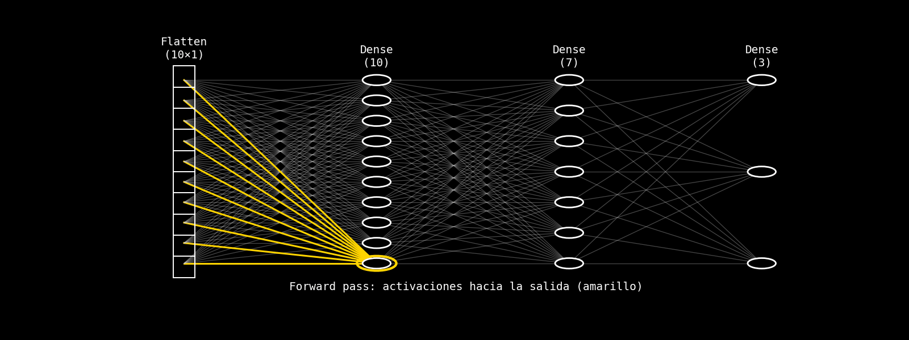
Fig. 8.31 fully_connected_backprop_intuition#
Este ejemplo se ha presentado de forma intencionalmente simplificada. En una CNN completa, la señal de error continúa propagándose hacia atrás a través de las capas convolucionales, ajustando también sus filtros. La fully connected permite fijar la intuición básica del backpropagation, que luego se extiende al caso convolucional incorporando la dimensión espacial y la compartición de pesos.
En una capa convolucional, el error no se asigna a neuronas individuales, sino que se redistribuye espacialmente sobre los mapas de activación, respetando la estructura local y los filtros compartidos.
8.24. Función de pérdida (Loss Function)#
Una red neuronal convolucional no aprende únicamente produciendo una salida, sino comparando esa salida con un valor objetivo y midiendo cuán lejos se encuentra de él. Esta medición se realiza mediante la función de pérdida, que traduce la discrepancia entre la predicción del modelo y la respuesta correcta en un valor numérico llamado error. La función de pérdida cumple un rol central: define qué significa “equivocarse” para la red y en qué dirección deben ajustarse los parámetros para mejorar. Sin una función de pérdida, una CNN puede ejecutar cálculos complejos, pero carece de un criterio para corregirse y aprender a partir de los datos.
8.25. Backpropagation en capas convolucionales#
El aprendizaje en una CNN se produce cuando el error calculado en la salida se propaga hacia atrás a través de la red, ajustando los pesos de cada capa. En las capas convolucionales, este proceso presenta una particularidad importante: el error no se asigna a neuronas individuales, sino que se redistribuye espacialmente sobre los mapas de activación. Cada filtro recibe una señal de corrección que resume cómo contribuyó, en conjunto, a los errores observados en distintas regiones de la imagen. De este modo, el backpropagation permite refinar filtros completos, fortaleciendo aquellos patrones que resultan útiles y atenuando los que no contribuyen a una buena predicción.
8.26. Compartición de pesos (Weight Sharing)#
Una característica distintiva de las CNN es que un mismo conjunto de pesos —el filtro convolucional— se aplica repetidamente sobre distintas regiones de la imagen. Esta compartición de pesos reduce drásticamente la cantidad de parámetros del modelo y refuerza la capacidad de generalización, ya que un patrón aprendido en una posición puede ser reconocido en cualquier otra. Gracias a este mecanismo, la red no necesita aprender versiones independientes del mismo detector para cada ubicación espacial, lo que hace a las CNN especialmente eficientes para el procesamiento de imágenes.
8.27. Campo receptivo (Receptive Field)#
El campo receptivo describe la región de la imagen original que influye en la activación de una neurona en una capa determinada. En las primeras capas convolucionales, el campo receptivo es pequeño y local, lo que permite detectar patrones simples como bordes o texturas. A medida que la red profundiza y se combinan convoluciones y operaciones de pooling, el campo receptivo crece, integrando información de regiones cada vez más amplias. Este crecimiento progresivo explica cómo las CNN logran pasar de características locales a representaciones más abstractas y globales.
8.28. Normalización (Batch Normalization y afines)#
Durante el entrenamiento, los valores intermedios de una red pueden variar significativamente, dificultando la optimización. Las técnicas de normalización, como Batch Normalization, se introducen para estabilizar estas activaciones y mantenerlas en rangos controlados. Al hacerlo, se facilita el flujo del gradiente, se acelera la convergencia y se vuelve el entrenamiento más robusto. Aunque no modifica la capacidad expresiva de la red, la normalización cumple un rol práctico fundamental en el entrenamiento de CNN profundas.
8.29. Regularización y generalización#
Una CNN puede aprender patrones relevantes, pero también corre el riesgo de memorizar los datos de entrenamiento y fallar frente a ejemplos nuevos. La regularización agrupa un conjunto de técnicas destinadas a prevenir este sobreajuste. Métodos como dropout, data augmentation y early stopping introducen restricciones o variabilidad controlada durante el entrenamiento, forzando a la red a aprender representaciones más generales. Estas estrategias son clave para que una CNN no solo funcione bien sobre los datos conocidos, sino que generalice correctamente a situaciones reales.
8.30. Arquitecturas CNN reales#
Las CNN modernas no suelen componerse de unas pocas capas aisladas, sino de arquitecturas cuidadosamente diseñadas que combinan bloques convolucionales, normalización y conexiones especiales. Modelos como LeNet, VGG, ResNet o U-Net representan distintas formas de organizar estos componentes para resolver problemas específicos. Comprender estas arquitecturas permite reconocer que los conceptos fundamentales —convolución, activación, pooling y aprendizaje— se reutilizan de manera sistemática, adaptándose a distintas escalas y complejidades.
8.31. Inferencia vs. entrenamiento#
Es importante distinguir entre dos modos de operación de una CNN: la inferencia y el entrenamiento. Durante la inferencia, la red únicamente ejecuta el cálculo hacia adelante para producir una predicción a partir de una entrada. En cambio, durante el entrenamiento, ese cálculo se complementa con la evaluación del error, la propagación hacia atrás y la actualización de los pesos. Esta distinción aclara por qué ciertos mecanismos, como la función de pérdida y el backpropagation, solo intervienen durante el aprendizaje y no en el uso cotidiano del modelo ya entrenado.